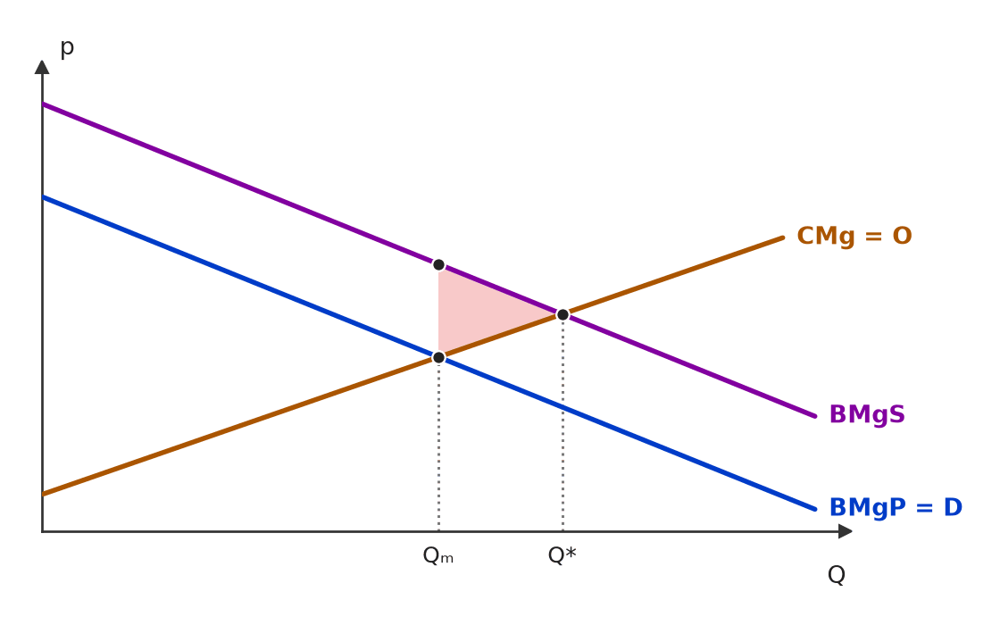
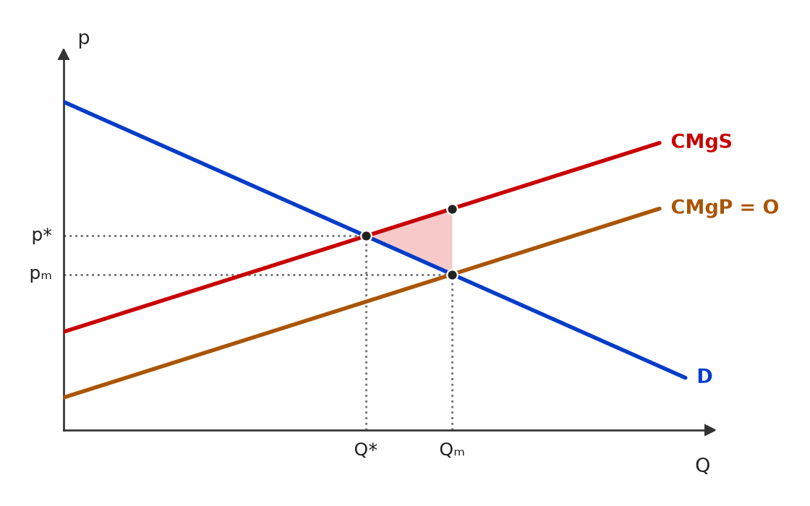
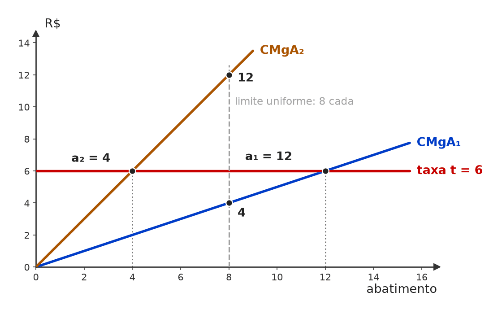
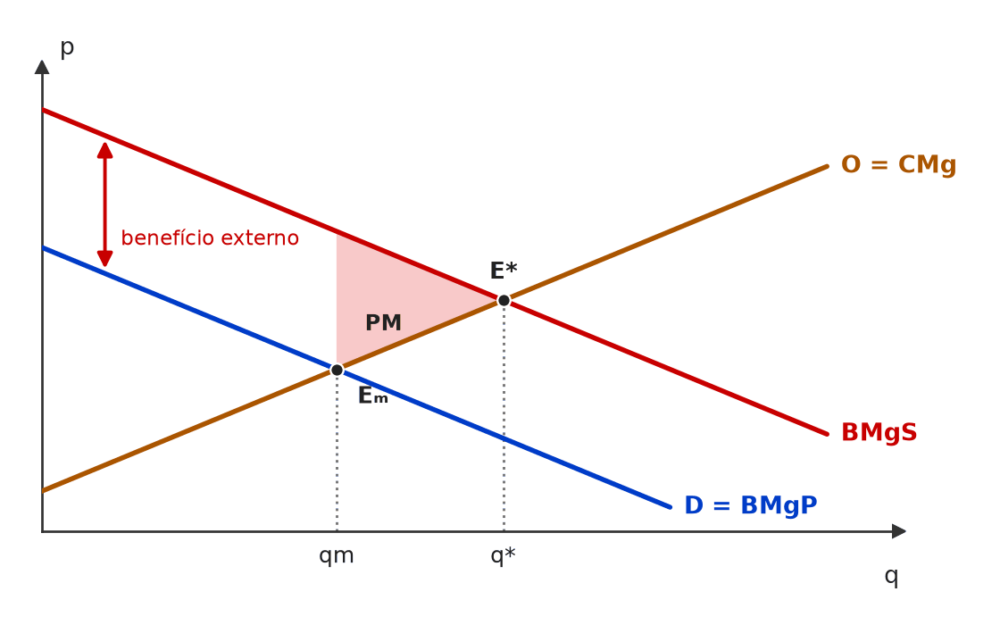
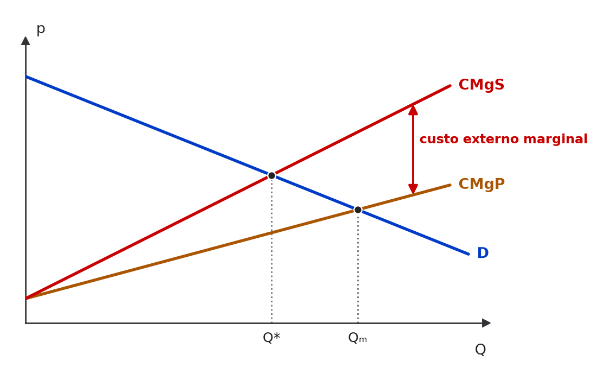
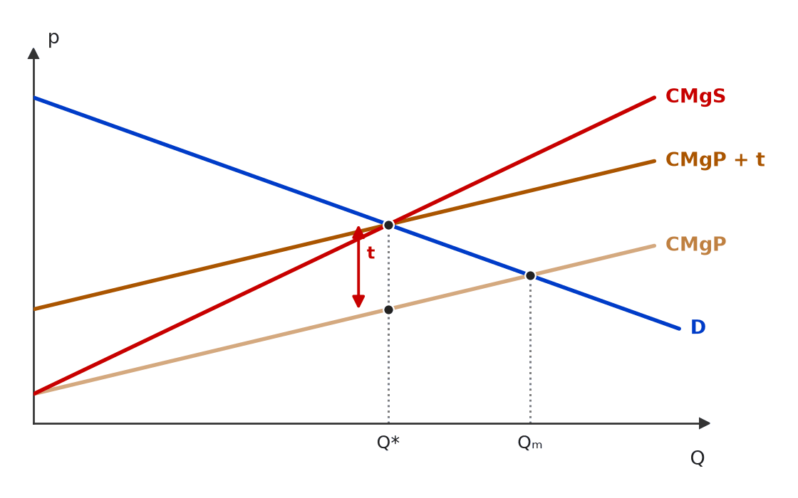
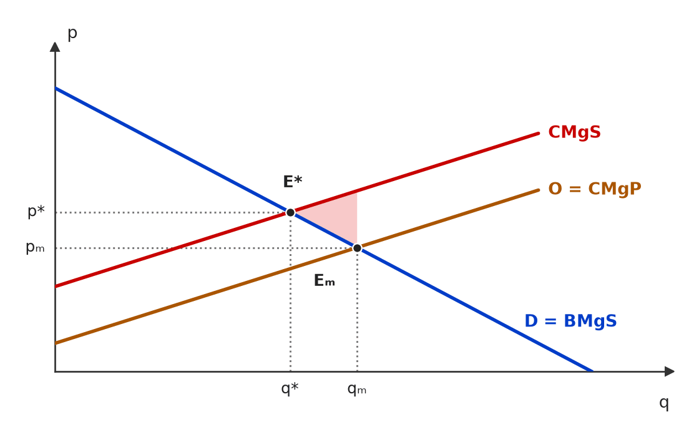
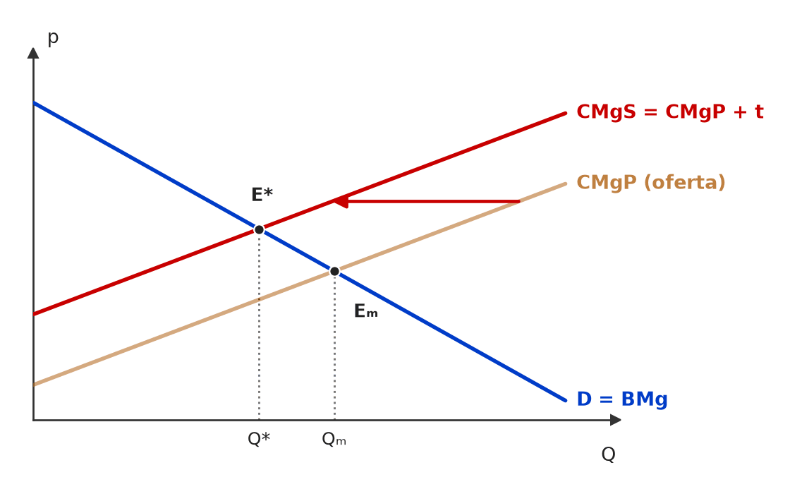
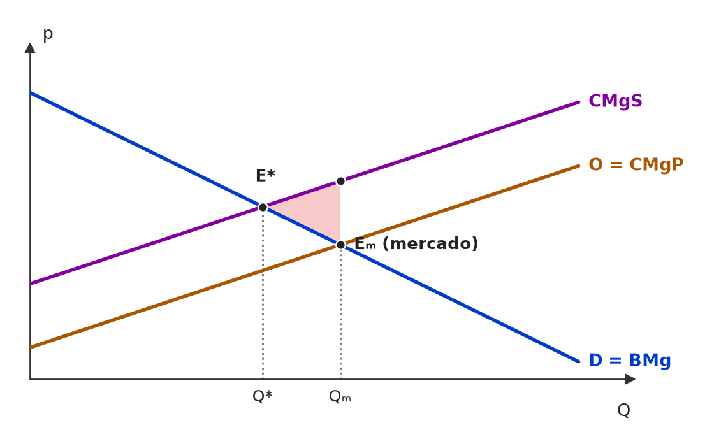
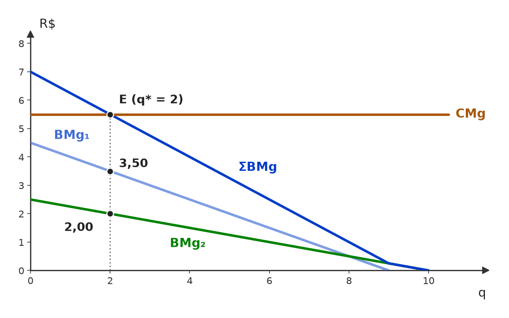

[C/E - CEBRASPE › ANTT/2023 › Externalidades e Coase]Em um prédio residencial, residem, em um apartamento, um casal e um bebê recém-nascido que precisa dormir várias horas durante o dia; em outro apartamento, mora um baterista que tem de ensaiar suas músicas durante o dia. Esses dois apartamentos são vizinhos. A respeito da situação hipotética precedente, julgue o próximo item. Item: Não há externalidade causada pelo baterista, uma vez que a perda de utilidade pelo casal por causa do ruído dos ensaios é compensada pelo aumento da utilidade do baterista ao cumprir sua atividade. | ❌ ERRADO Não há externalidade causada pelo baterista, uma vez que a perda de utilidade pelo casal por causa do ruído dos ensaios é compensada pelo aumento da utilidade do baterista ao cumprir sua atividade. 🎯 Em poucas palavras: Há externalidade negativa: o ruído reduz o bem-estar do casal sem passar pelo mercado e sem pagamento. O ganho do próprio baterista não “compensa” nada — ele não paga ao vizinho. 📖 Destrinchando o tema:
🧐 Dissecando a redação do item: [nexo indevido · troca de conceito] O item troca o critério de existência da externalidade (efeito não compensado sobre terceiro) por um balanço de utilidades entre pessoas diferentes. “Compensada” é a palavra-gatilho: ninguém pagou ninguém. 😈 Para dificultar:
✍️ Reescrita correta: Há externalidade negativa causada pelo baterista, uma vez que a perda de utilidade do casal por causa do ruído dos ensaios não é compensada, ainda que o baterista ganhe utilidade ao cumprir sua atividade. |
[C/E - CEBRASPE › ANTT/2023 › Externalidades e Coase]Acerca da teoria da regulação e das estruturas de mercado, julgue os itens subsequentes. Item: De acordo com o teorema de Coase, desde que atribuído o direito de propriedade em favor do agente que sofre os efeitos de uma externalidade negativa, a negociação privada entre quem produz e quem sofre os efeitos da externalidade resultará em uma alocação socialmente eficiente na ausência de custos de transação. | ❌ ERRADO De acordo com o teorema de Coase, desde que atribuído o direito de propriedade em favor do agente que sofre os efeitos de uma externalidade negativa, a negociação privada entre quem produz e quem sofre os efeitos da externalidade resultará em uma alocação socialmente eficiente na ausência de custos de transação. 🎯 Em poucas palavras: Para Coase, basta que o direito esteja bem definido — a favor de qualquer das partes. A atribuição muda quem paga a quem (distribuição), não a eficiência. 📖 Destrinchando o tema:
🧐 Dissecando a redação do item: [restrição indevida] A expressão “desde que” transforma uma das atribuições possíveis em condição necessária. O resto (negociação privada, custos de transação nulos, eficiência) está certo, o que induz a marcar CERTO. 🔥 Variante frequente: “o resultado depende de quem detém o direito” (ERRADO). 😈 Para dificultar:
✍️ Reescrita correta: De acordo com o teorema de Coase, qualquer que seja o agente em favor do qual se atribua o direito de propriedade — quem produz ou quem sofre a externalidade —, a negociação privada entre quem produz e quem sofre os efeitos da externalidade resultará em uma alocação socialmente eficiente na ausência de custos de transação. |
❌ [C/E - FCC › ManausPrev/Analista Previdenciário/2021 › Externalidades e Coase]Julgue o item a seguir, relativo às externalidades e aos instrumentos para corrigi-las (item adaptado). Item: O atual risco de crise de abastecimento de energia elétrica no Brasil levou à adoção de sobretaxas nas tarifas de consumo, o que equivale a um imposto de Pigou, dado o seu efeito positivo sobre o meio ambiente. | ❌ ERRADO O atual risco de crise de abastecimento de energia elétrica no Brasil levou à adoção de sobretaxas nas tarifas de consumo, o que equivale a um imposto de Pigou, dado o seu efeito positivo sobre o meio ambiente. 🎯 Em poucas palavras: Imposto de Pigou corrige uma externalidade (custo social não refletido no preço). A sobretaxa da crise hídrica é gestão de demanda e repasse do custo da geração mais cara: não mira dano ambiental. 📖 Destrinchando o tema:
🧐 Dissecando a redação do item: [troca de conceito · nexo indevido] O item cola o rótulo “Pigou” em qualquer tributo com efeito sobre o consumo e justifica com um benefício ambiental acidental. Pergunte sempre: qual é a externalidade que o tributo corrige? Se a resposta for “nenhuma”, não é Pigou. 😈 Para dificultar:
✍️ Reescrita correta: O atual risco de crise de abastecimento de energia elétrica no Brasil levou à adoção de sobretaxas nas tarifas de consumo, o que não equivale a um imposto de Pigou: é medida de gestão da demanda e de repasse do custo mais alto da geração, sem correção de externalidade ambiental. |
[C/E - IDEG – Prof. Bozan › Pré-TPS/2026 › Externalidades e Coase]Sobre as falhas de mercado e as intervenções governamentais para corrigir essas falhas, julgue as assertivas a seguir. Item: Externalidades são impactos econômicos que fogem ao controle de quem os gera. Por exemplo, quando uma empresa desenvolve uma tecnologia inovadora, invariavelmente, causa esforços adicionais em outras empresas do setor para se adaptarem à nova tecnologia, caracterizando uma externalidade negativa. | ❌ ERRADO Externalidades são impactos econômicos que fogem ao controle de quem os gera. Por exemplo, quando uma empresa desenvolve uma tecnologia inovadora, invariavelmente, causa esforços adicionais em outras empresas do setor para se adaptarem à nova tecnologia, caracterizando uma externalidade negativa. 🎯 Em poucas palavras: A inovação que se difunde pelo setor é o exemplo-padrão de externalidade positiva (transbordamento de conhecimento). O custo de adaptação imposto pela concorrência atua via mercado e não configura externalidade negativa. 📖 Destrinchando o tema:
🧐 Dissecando a redação do item: [troca de conceito · modulador absoluto] A definição inicial é frouxa, mas aceitável; o erro está na classificação (negativa no lugar de positiva) e no “invariavelmente”, que transforma um efeito possível de concorrência em regra. Pista: o “dano” descrito passa pelo mercado, não por fora dele. 😈 Para dificultar:
✍️ Reescrita correta: Externalidades são impactos econômicos que fogem ao controle de quem os gera. Por exemplo, quando uma empresa desenvolve uma tecnologia inovadora, o conhecimento tende a transbordar para outras empresas do setor, que se beneficiam dele sem pagar, caracterizando uma externalidade positiva. |
[C/E - IDEG – Prof. Bozan › Pré-TPS/2026 › Externalidades e Coase]Sobre as falhas de mercado e as intervenções governamentais para corrigir essas falhas, julgue as assertivas a seguir. Item: O teorema de Coase sugere que, para resolver externalidades negativas, deve-se evitar intervenções diretas do governo, como impostos ou licenças para poluir. Em vez disso, é preferível uma solução privada, em que as partes envolvidas negociem entre si, podendo o governo atuar como mediador para facilitar um acordo que maximize os benefícios sociais. | ✅ CERTO O teorema de Coase sugere que, para resolver externalidades negativas, deve-se evitar intervenções diretas do governo, como impostos ou licenças para poluir. Em vez disso, é preferível uma solução privada, em que as partes envolvidas negociem entre si, podendo o governo atuar como mediador para facilitar um acordo que maximize os benefícios sociais. 🎯 Em poucas palavras: Pelo teorema de Coase, com direitos de propriedade definidos e custos de transação nulos, a negociação privada já leva ao resultado eficiente, sem imposto nem regulação; ao Estado basta definir direitos e facilitar o acordo. ⚠️ Gabarito contestável: o teorema é uma proposição condicional (vale se os custos de transação forem nulos), não uma recomendação de política. O próprio Coase insistia que, no mundo real, esses custos são altos — e então impostos e regulação podem ser a melhor opção. Além disso, as licenças negociáveis para poluir são justamente a aplicação da lógica coasiana (criar um direito de propriedade e deixá-lo ser trocado), e não o seu oposto. O CERTO só se sustenta na leitura escolar “Coase = solução privada, Pigou = solução pública”. 📖 Destrinchando o tema:
🧐 Dissecando a redação do item: [paráfrase fiel · modulador relativo] A banca resume Coase como “solução privada em vez de intervenção”, com o governo como “mediador”. Quem conhece a crítica às licenças hesita; o gabarito segue a leitura de manual. Em C/E de cursinho, “Coase → negociação privada” costuma ser CERTO. 😈 Para dificultar:
|
[C/E - Armstrong › Pré-TPS/2026 › Externalidades e Coase]Julgue o item a seguir, relativo às falhas de mercado. Item: De acordo com o Teorema de Coase, se os custos de transação forem nulos e os direitos de propriedade forem bem definidos, a alocação de recursos resultante da negociação entre as partes será eficiente, independentemente de como os direitos de propriedade foram distribuídos inicialmente, embora a distribuição de riqueza final entre as partes possa ser afetada. | ✅ CERTO De acordo com o Teorema de Coase, se os custos de transação forem nulos e os direitos de propriedade forem bem definidos, a alocação de recursos resultante da negociação entre as partes será eficiente, independentemente de como os direitos de propriedade foram distribuídos inicialmente, embora a distribuição de riqueza final entre as partes possa ser afetada. 🎯 Em poucas palavras: A eficiência não depende de quem recebe o direito; a distribuição depende: o titular do direito é quem recebe o pagamento na negociação. 📖 Destrinchando o tema:
🧐 Dissecando a redação do item: [literalidade · detalhe] Versão completa do teorema, com o adendo distributivo. O “embora … possa ser afetada” é o detalhe que derruba quem acha que Coase torna a atribuição de direitos irrelevante em tudo. Ver também ECO-E2-L00517-1 e ECO-E2-L00680-1. 😈 Para dificultar:
|
[C/E - Nabuco › Externalidades e Coase]A respeito de falhas de mercado, julgue (C ou E) os itens a seguir. Item: Um subsídio pigouviano é o instrumento correto para internalizar uma externalidade negativa, pois ao subsidiar o produtor, o governo o incentiva a reduzir a atividade que gera o dano social. | ❌ ERRADO Um subsídio pigouviano é o instrumento correto para internalizar uma externalidade negativa, pois ao subsidiar o produtor, o governo o incentiva a reduzir a atividade que gera o dano social. 🎯 Em poucas palavras: Externalidade negativa pede imposto pigouviano (encarece a atividade danosa); o subsídio pigouviano é o remédio da externalidade positiva (barateia a atividade benéfica). 📖 Destrinchando o tema:
🧐 Dissecando a redação do item: [troca de conceito] O item troca o instrumento (subsídio no lugar de imposto) e constrói uma justificativa que não fecha: subsidiar não incentiva a reduzir. Pista: o verbo “reduzir” combina com “encarecer”, não com “subsidiar”. 😈 Para dificultar:
✍️ Reescrita correta: Um imposto pigouviano é o instrumento correto para internalizar uma externalidade negativa, pois ao tributar o produtor, o governo o incentiva a reduzir a atividade que gera o dano social. |
[C/E - Nabuco › Externalidades e Coase]A respeito de falhas de mercado, julgue (C ou E) os itens a seguir. Item: A vacinação em massa gera uma externalidade positiva, pois além de proteger o indivíduo vacinado, reduz a probabilidade de contágio para toda a comunidade. Devido a essa externalidade, a provisão de vacinas pelo mercado privado tende a ser inferior à socialmente ótima. | ✅ CERTO A vacinação em massa gera uma externalidade positiva, pois além de proteger o indivíduo vacinado, reduz a probabilidade de contágio para toda a comunidade. Devido a essa externalidade, a provisão de vacinas pelo mercado privado tende a ser inferior à socialmente ótima. 🎯 Em poucas palavras: Quem se vacina considera só o benefício privado; o benefício para os outros (menos contágio) fica fora da decisão. Com benefício social > privado, o mercado subprovê vacinas. 📖 Destrinchando o tema:
📈 No gráfico:  A demanda de mercado reflete só o benefício privado (BMgP); somado o benefício externo, a curva social (BMgS) fica acima. O mercado para em Qₘ, abaixo do ótimo Q*: o triângulo vermelho é o bem-estar perdido pela subvacinação. 🧐 Dissecando a redação do item: [paráfrase fiel] Item de manual (é o exemplo de Mankiw), com causa e efeito na ordem certa. A banca costuma inverter o sentido do desvio (“superior à socialmente ótima”) ou o sinal da externalidade. 😈 Para dificultar:
|
[C/E - Nabuco › Externalidades e Coase]A respeito de falhas de mercado, julgue (C ou E) os itens a seguir. Item: O Teorema de Coase postula que, na ausência de custos de transação e com direitos de propriedade bem definidos, as partes envolvidas em uma externalidade podem negociar privadamente e alcançar uma solução eficiente, independentemente de a quem o direito de propriedade foi inicialmente alocado. | ✅ CERTO O Teorema de Coase postula que, na ausência de custos de transação e com direitos de propriedade bem definidos, as partes envolvidas em uma externalidade podem negociar privadamente e alcançar uma solução eficiente, independentemente de a quem o direito de propriedade foi inicialmente alocado. 🎯 Em poucas palavras: Enunciado-padrão do teorema de Coase, com as duas condições (custos de transação nulos, direitos definidos) e a conclusão (eficiência qualquer que seja o titular do direito). 📖 Destrinchando o tema:
🧐 Dissecando a redação do item: [literalidade] Enunciado completo, sem enxerto. As versões erradas costumam tirar uma das condições, trocar “independentemente” por “desde que o direito seja de X” (ECO-E2-L00852-1) ou fazer a eficiência “depender apenas” da distribuição (ECO-E2-L01179-1). 😈 Para dificultar:
|
[C/E - Nabuco › Externalidades e Coase]Sobre externalidades e bens públicos, julgue (C ou E) os seguintes itens. Item: A presença de externalidades negativas na produção faz com que o custo marginal social seja superior ao custo marginal privado, resultando em uma quantidade de equilíbrio de mercado superior à socialmente ótima. | ✅ CERTO A presença de externalidades negativas na produção faz com que o custo marginal social seja superior ao custo marginal privado, resultando em uma quantidade de equilíbrio de mercado superior à socialmente ótima. 🎯 Em poucas palavras: CMgS = CMgP + custo externo marginal. O produtor decide pelo CMgP, mais baixo, e produz até onde CMgP = demanda: sobreprodução em relação ao ótimo, onde CMgS = demanda. 📖 Destrinchando o tema:
📈 No gráfico:  O custo externo desloca o custo social para cima do privado (CMgS acima de CMgP). O mercado iguala CMgP à demanda e produz Qₘ; o ótimo social, onde CMgS cruza a demanda, é Q*, menor e com preço maior. O triângulo vermelho é o peso morto da sobreprodução. 🧐 Dissecando a redação do item: [paráfrase fiel] Os dois “superior” estão no lugar certo. A banca fabrica o ERRADO invertendo um deles: CMgS “inferior” ao privado (ECO-E2-L00971-1) ou curva social “abaixo” (ECO-E2-L00871-1), ou ainda quantidade de mercado “inferior”. 😈 Para dificultar:
|
[C/E - Nabuco › Externalidades e Coase]Sobre externalidades e bens públicos, julgue (C ou E) os seguintes itens. Item: O Teorema de Coase afirma que, na ausência de custos de transação e com direitos de propriedade bem definidos, a negociação privada levará a uma alocação eficiente de recursos, independentemente de a quem os direitos de propriedade sejam atribuídos inicialmente. | ✅ CERTO O Teorema de Coase afirma que, na ausência de custos de transação e com direitos de propriedade bem definidos, a negociação privada levará a uma alocação eficiente de recursos, independentemente de a quem os direitos de propriedade sejam atribuídos inicialmente. 🎯 Em poucas palavras: É o teorema de Coase em sua forma canônica: com direitos definidos e negociação sem custo, as partes chegam ao ótimo de Pareto, seja quem for o titular inicial do direito. 📖 Destrinchando o tema:
🧐 Dissecando a redação do item: [literalidade] Mesmo enunciado de ECO-E2-L00517-1, com “levará” em vez de “podem negociar”. O futuro categórico é seguro aqui porque as condições do teorema foram dadas. As versões erradas mexem na atribuição do direito ou retiram uma das condições. 😈 Para dificultar:
|
[C/E - Nidi/Jacqueline Bueno › Simulado Julho/2025 › Externalidades e Coase]A respeito das Teorias das Externalidades e dos Bens Públicos, julgue como certo ou errado os itens a seguir. Item: Quando o Brasil emprega uma política de restrição à exportação de carne bovina para a Europa e, consequentemente, isso provoca um aumento no preço dos bens substitutos, como da carne de porco ou frango, nos países europeus, isso pode ser caracterizado como uma externalidade negativa da política de restrição brasileira. | ❌ ERRADO Quando o Brasil emprega uma política de restrição à exportação de carne bovina para a Europa e, consequentemente, isso provoca um aumento no preço dos bens substitutos, como da carne de porco ou frango, nos países europeus, isso pode ser caracterizado como uma externalidade negativa da política de restrição brasileira. 🎯 Em poucas palavras: Efeito transmitido pelos preços não é externalidade (falha de mercado): é o mercado funcionando. Externalidade é efeito sobre terceiros por fora do sistema de preços. 📖 Destrinchando o tema:
🧐 Dissecando a redação do item: [troca de conceito] O item descreve corretamente a cadeia de preços e cola nela o rótulo errado. A palavra “consequentemente” e a menção a bens substitutos entregam o mecanismo: é estática comparativa de oferta e demanda, não falha de mercado. 😈 Para dificultar:
✍️ Reescrita correta: Quando o Brasil emprega uma política de restrição à exportação de carne bovina para a Europa e, consequentemente, isso provoca um aumento no preço dos bens substitutos, como da carne de porco ou frango, nos países europeus, isso não pode ser caracterizado como uma externalidade negativa da política de restrição brasileira, mas como ajuste normal de mercado, transmitido pelos preços. |
[C/E - Nidi/Jacqueline Bueno › Simulado Julho/2025 › Externalidades e Coase]A respeito das Teorias das Externalidades e dos Bens Públicos, julgue como certo ou errado os itens a seguir. Item: Se duas empresas poluidoras possuem processos produtivos diferentes e diferentes custos de redução de emissões, taxas sobre a quantidade de poluente emitida podem ser preferíveis à imposição de um limite permitido. | ✅ CERTO Se duas empresas poluidoras possuem processos produtivos diferentes e diferentes custos de redução de emissões, taxas sobre a quantidade de poluente emitida podem ser preferíveis à imposição de um limite permitido. 🎯 Em poucas palavras: Com custos de abatimento diferentes, a taxa faz cada firma reduzir até CMgA = t: quem abate barato abate mais, e a meta é atingida ao menor custo total. O limite uniforme ignora essa diferença. 📖 Destrinchando o tema:
📈 No gráfico:  Meta: abater 16 toneladas no total. Com a taxa t = 6, a firma 1 (abatimento barato) reduz 12 e a firma 2 reduz 4, e os custos marginais se igualam em 6 (custo total 48). Com o limite uniforme (8 para cada), os custos marginais ficam desiguais (4 × 12) e o custo total sobe para 64. 🧐 Dissecando a redação do item: [modulador relativo · literalidade] A condição (“custos de redução diferentes”) é exatamente a que dá vantagem à taxa, e o “podem ser preferíveis” evita a generalização. 🔥 O mesmo item aparece em outros simulados com redação quase idêntica. 😈 Para dificultar:
|
[C/E - Nidi/Jacqueline Bueno › Fevereiro/2025 › Externalidades e Coase]Os bens públicos e as externalidades são conceitos fundamentais na teoria econômica [...]. Julgue os itens a seguir. Item: Se empresas que produzem externalidade negativa, ao executarem uma atividade produtiva poluidora, possuem processos produtivos distintos e diferentes níveis de custo para reduzir as emissões poluentes, a imposição de uma taxa sobre a quantidade de poluente emitido pode ser preferível ao estabelecimento de um limite permitido de emissão. | ✅ CERTO Se empresas que produzem externalidade negativa, ao executarem uma atividade produtiva poluidora, possuem processos produtivos distintos e diferentes níveis de custo para reduzir as emissões poluentes, a imposição de uma taxa sobre a quantidade de poluente emitido pode ser preferível ao estabelecimento de um limite permitido de emissão. 🎯 Em poucas palavras: Taxa = preço único da poluição; cada firma abate até CMgA = taxa. Quem abate barato abate mais e a meta sai ao menor custo total — o limite uniforme não faz essa triagem. 📖 Destrinchando o tema:
📈 No gráfico: Meta: abater 16 toneladas no total. Com a taxa t = 6, a firma 1 (abatimento barato) reduz 12 e a firma 2 reduz 4, e os custos marginais se igualam em 6 (custo total 48). Com o limite uniforme (8 para cada), os custos marginais ficam desiguais (4 × 12) e o custo total sobe para 64. 🧐 Dissecando a redação do item: [modulador relativo · paráfrase fiel] Versão ampliada de um item clássico (“taxas podem ser preferíveis a limites com custos diferentes”). As expressões “diferentes níveis de custo” e “pode ser” são as chaves do CERTO. 😈 Para dificultar:
|
[C/E - Nidi/Jacqueline Bueno › Fevereiro/2025 › Externalidades e Coase]Os bens públicos e as externalidades são conceitos fundamentais na teoria econômica [...]. Julgue os itens a seguir. Item: Mesmo que não haja intervenção governamental para a reciclagem do lixo, alguma reciclagem poderá ocorrer se os preços dos materiais novos forem muito elevados em relação ao material reciclado. | ✅ CERTO Mesmo que não haja intervenção governamental para a reciclagem do lixo, alguma reciclagem poderá ocorrer se os preços dos materiais novos forem muito elevados em relação ao material reciclado. 🎯 Em poucas palavras: Material reciclado e virgem são insumos substitutos: se o virgem encarece, reciclar passa a dar lucro e o mercado recicla sozinho — embora, em geral, menos que o socialmente ótimo. 📖 Destrinchando o tema:
🧐 Dissecando a redação do item: [modulador relativo] “Alguma” e “poderá” fazem do item uma afirmação de possibilidade, e o mecanismo (preço relativo) é sólido. A versão ERRADA diria que, sem intervenção, a reciclagem atinge o nível socialmente ótimo ou que nunca ocorre. 😈 Para dificultar:
|
[DISC - Intensivo MM › Intensivo Pré-TPS/2024 › Externalidades e Coase]Responda à questão a seguir, sobre externalidades e eficiência na produção. Questão: Defina o nível eficiente de produção no setor. | 🔵 RESPOSTA O nível eficiente de produção no setor é aquele em que o benefício marginal de uma unidade adicional do produto é igual ao custo marginal social (custo marginal privado + custo marginal externo). 🎯 Em poucas palavras: Eficiência = BMgS = CMgS. Com externalidade negativa, o mercado iguala o benefício ao custo privado e produz demais; o ótimo social exige incluir o custo externo. 📖 Destrinchando o tema:
🧐 Dissecando a redação do item: [discursiva curta] Em C/E, o conceito volta como “o equilíbrio de mercado com externalidade negativa é eficiente” (ERRADO) ou “o nível eficiente iguala o benefício marginal ao custo marginal privado” (ERRADO: falta o custo externo). A palavra-chave é social. 😈 Para dificultar:
|
❌ [C/E - Nidi/Jacqueline Bueno › Simulado Julho/2023 › Externalidades e Coase]Julgue o item a seguir, relativo às externalidades e à tributação corretiva. Item: O Imposto pigouviano é uma das ferramentas utilizadas pelo Estado para correção de externalidades negativas. Este é o caso da taxação do combustível, utilizada com a finalidade de reduzir a poluição do ar. O imposto pode ser aplicado tanto às indústrias, incentivando a redução da oferta do bem gerador da externalidade negativa, quanto sobre o bem final, incentivando uma redução no consumo. | ✅ CERTO O Imposto pigouviano é uma das ferramentas utilizadas pelo Estado para correção de externalidades negativas. Este é o caso da taxação do combustível, utilizada com a finalidade de reduzir a poluição do ar. O imposto pode ser aplicado tanto às indústrias, incentivando a redução da oferta do bem gerador da externalidade negativa, quanto sobre o bem final, incentivando uma redução no consumo. 🎯 Em poucas palavras: O imposto pigouviano cobra de quem gera a externalidade negativa um valor igual ao dano marginal, fazendo o preço refletir o custo social. Pode incidir na produção ou no consumo: nos dois casos, a quantidade do bem poluidor cai. 📖 Destrinchando o tema:
🧐 Dissecando a redação do item: [paráfrase fiel · detalhe] Item conceitual sem armadilha de sinal; o risco está no “tanto às indústrias quanto sobre o bem final”, que tenta fazer o candidato achar que o imposto só vale num dos lados. 🔥 A banca adora a equivalência da incidência legal. 😈 Para dificultar:
|
[C/E - Nabuco › Pré-TPS/2023 › Externalidades e Coase]Em relação à microeconomia e à teoria do comércio internacional, julgue (C ou E) os seguintes itens. Item: A externalidade negativa implica que o custo marginal social da produção é menor que o custo marginal privado. | ❌ ERRADO A externalidade negativa implica que o custo marginal social da produção é menor que o custo marginal privado. 🎯 Em poucas palavras: Externalidade negativa = custo que recai sobre terceiros, somado ao do produtor: CMgS = CMgP + CE, portanto CMgS é maior que CMgP. 📖 Destrinchando o tema:
🧐 Dissecando a redação do item: [inversão] Inversão de sinal pura, sem enxerto. Mesma relação de ECO-E2-L00871-1 e ECO-E2-L00679-1. Pista: “negativa” para a sociedade significa custo a mais, nunca a menos. 😈 Para dificultar:
✍️ Reescrita correta: A externalidade negativa implica que o custo marginal social da produção é maior que o custo marginal privado. |
[C/E - Nabuco › Pré-TPS/2023 › Externalidades e Coase]Em relação aos conceitos de externalidades, bens públicos e recursos comuns, julgue (C ou E) os itens a seguir. Item: Pode-se dizer que existe externalidade quando há conluio entre os produtores que operam em um mercado oligopolista. | ❌ ERRADO Pode-se dizer que existe externalidade quando há conluio entre os produtores que operam em um mercado oligopolista. 🎯 Em poucas palavras: Conluio é poder de mercado (outra falha de mercado): os produtores combinam preços via mercado. Externalidade é efeito sobre terceiros que não passa pelo preço. 📖 Destrinchando o tema:
🧐 Dissecando a redação do item: [troca de conceito] Troca uma falha de mercado por outra. O “pode-se dizer” tenta amaciar a afirmação, mas o conceito está errado em qualquer grau. Pista: pergunte se há terceiro afetado fora do preço. 😈 Para dificultar:
✍️ Reescrita correta: Pode-se dizer que existe poder de mercado (falha distinta da externalidade) quando há conluio entre os produtores que operam em um mercado oligopolista. |
[C/E - Nabuco › Pré-TPS/2023 › Externalidades e Coase]Em relação aos conceitos de externalidades, bens públicos e recursos comuns, julgue (C ou E) os itens a seguir. Item: Um aumento no preço das passagens aéreas, ao provocar a redução da demanda por serviços aeroportuários, é um sinal da existência de externalidade negativa. | ❌ ERRADO Um aumento no preço das passagens aéreas, ao provocar a redução da demanda por serviços aeroportuários, é um sinal da existência de externalidade negativa. 🎯 Em poucas palavras: Passagem aérea e serviços aeroportuários são bens complementares: o efeito corre pelo sistema de preços. É o funcionamento normal do mercado (efeito pecuniário), não externalidade. 📖 Destrinchando o tema:
🧐 Dissecando a redação do item: [troca de conceito · nexo indevido] A banca descreve uma relação correta entre mercados complementares e lhe cola o rótulo errado. A pista é o verbo “provocar” ligado a preço: o canal é o mercado. 😈 Para dificultar:
✍️ Reescrita correta: Um aumento no preço das passagens aéreas, ao provocar a redução da demanda por serviços aeroportuários, não é sinal de externalidade, mas de complementaridade entre os dois serviços, transmitida pelos preços. |
[C/E - Nabuco › Pré-TPS/2023 › Externalidades e Coase]Com referência ao teorema de Coase, julgue (C ou E) os itens a seguir. Item: O chamado teorema de Coase assevera que os atores privados podem resolver, de forma eficiente, o problema das externalidades entre si, dependendo apenas da distribuição inicial de direitos entre esses atores. | ❌ ERRADO O chamado teorema de Coase assevera que os atores privados podem resolver, de forma eficiente, o problema das externalidades entre si, dependendo apenas da distribuição inicial de direitos entre esses atores. 🎯 Em poucas palavras: No teorema de Coase a eficiência é independente da distribuição inicial dos direitos e depende de duas condições: direitos bem definidos e custos de transação nulos. 📖 Destrinchando o tema:
🧐 Dissecando a redação do item: [inversão · restrição indevida] Inverte a relação central do teorema (independência → dependência) e acrescenta um “apenas” que apaga a outra condição. Mesma família de ECO-E2-L00852-1. 😈 Para dificultar:
✍️ Reescrita correta: O chamado teorema de Coase assevera que os atores privados podem resolver, de forma eficiente, o problema das externalidades entre si, independentemente da distribuição inicial de direitos, desde que bem definidos e sem custos de transação entre esses atores. |
[C/E - Nabuco › Pré-TPS/2023 › Externalidades e Coase]Com referência ao teorema de Coase, julgue (C ou E) os itens a seguir. Item: A solução de Coase é afetada pela presença de custos transacionais, que obstaculariza a geração de acordos eficientes entre as partes. | ✅ CERTO A solução de Coase é afetada pela presença de custos transacionais, que obstaculariza a geração de acordos eficientes entre as partes. 🎯 Em poucas palavras: O teorema de Coase só garante a solução eficiente por barganha se os custos de transação forem nulos (ou baixos). Com custos de negociar, fiscalizar e fazer cumprir o acordo, a barganha pode não acontecer. 📖 Destrinchando o tema:
🧐 Dissecando a redação do item: [literalidade] O item reproduz a principal ressalva do teorema. A concordância “custos transacionais, que obstaculariza” é falha de redação, não de conteúdo. 🔥 Itens de Coase quase sempre giram em torno de três palavras: custos de transação, direitos de propriedade e “independentemente” da atribuição. 😈 Para dificultar:
|
[C/E - Nabuco › Pré-TPS/2023 › Externalidades e Coase]Com referência ao teorema de Coase, julgue (C ou E) os itens a seguir. Item: Segundo o teorema de Coase, é possível ter soluções privadas para as externalidades geradas em uma economia. | ✅ CERTO Segundo o teorema de Coase, é possível ter soluções privadas para as externalidades geradas em uma economia. 🎯 Em poucas palavras: É a tese central de Coase: a externalidade pode ser resolvida por barganha privada, sem imposto nem regulação, desde que haja direitos definidos e custos de transação baixos. 📖 Destrinchando o tema:
🧐 Dissecando a redação do item: [modulador relativo · literalidade] O “é possível” salva o item: a banca não diz que a solução privada sempre ocorre, só que o teorema a admite. Itens com “sempre”, “qualquer que sejam os custos” ou “dispensa direitos de propriedade” costumam ser os ERRADOS do bloco. 😈 Para dificultar:
|
[C/E - Nabuco › Pré-TPS/2023 › Externalidades e Coase]Com referência ao teorema de Coase, julgue (C ou E) os itens a seguir. Item: O nível ótimo (minimização) de danos ambientais, tais como ameaças à fauna e à flora do país, bem como os decorrentes de poluição sonora e atmosférica, pode ser determinado no âmbito do teorema de Coase. | ❌ ERRADO O nível ótimo (minimização) de danos ambientais, tais como ameaças à fauna e à flora do país, bem como os decorrentes de poluição sonora e atmosférica, pode ser determinado no âmbito do teorema de Coase. 🎯 Em poucas palavras: Danos ambientais difusos envolvem milhões de partes, custos de transação altíssimos, carona e direitos mal definidos: é justamente o caso em que a barganha de Coase não funciona. 📖 Destrinchando o tema:
🧐 Dissecando a redação do item: [extrapolação] O item estende o teorema a um caso que ele não cobre. A lista longa de danos “difusos” (fauna, flora, ar, ruído) é a pista: em todos eles a outra parte da negociação é a coletividade inteira. 😈 Para dificultar:
✍️ Reescrita correta: O nível ótimo (minimização) de danos ambientais, tais como ameaças à fauna e à flora do país, bem como os decorrentes de poluição sonora e atmosférica, dificilmente pode ser alcançado por negociação privada no âmbito do teorema de Coase, por envolver muitas partes e custos de transação elevados. |
[C/E - Prof. Rodrigo Teixeira › Intensivo Pré-TPS/2023 › Externalidades e Coase]A respeito dos conceitos e teorias da microeconomia, julgue os itens a seguir. Item: Dentre as soluções para a externalidade positiva da vacinação contra Covid 19, estão a regulamentação do governo, por exemplo instituindo o passaporte da vacina, com a exigência da vacinação para frequentar certos locais, e os impostos de Pigou, que são o aumento da carga tributária para gerar receita e pagar pelas vacinas. | ❌ ERRADO Dentre as soluções para a externalidade positiva da vacinação contra Covid 19, estão a regulamentação do governo, por exemplo instituindo o passaporte da vacina, com a exigência da vacinação para frequentar certos locais, e os impostos de Pigou, que são o aumento da carga tributária para gerar receita e pagar pelas vacinas. 🎯 Em poucas palavras: Externalidade positiva se corrige com subsídio de Pigou (barateia a atividade); o imposto de Pigou é para externalidade negativa e não tem finalidade arrecadatória. 📖 Destrinchando o tema:
🧐 Dissecando a redação do item: [troca de conceito · meia-verdade] A primeira solução (regulação, passaporte) está certa; o erro foi enxertado na segunda, com dois problemas: instrumento trocado (imposto no lugar de subsídio) e definição deturpada (arrecadação no lugar de correção). 🔥 A banca adora pedir o sinal do instrumento pigouviano. 😈 Para dificultar:
✍️ Reescrita correta: Dentre as soluções para a externalidade positiva da vacinação contra Covid 19, estão a regulamentação do governo, por exemplo instituindo o passaporte da vacina, com a exigência da vacinação para frequentar certos locais, e os subsídios de Pigou, que reduzem o custo privado da vacinação e aproximam o consumo do nível socialmente ótimo. |
❌ [C/E - Prof. Rodrigo Teixeira › Intensivo Pré-TPS/2023 › Externalidades e Coase]A teoria da firma permite analisar a relação entre os custos de produção e as estruturas de mercado. A respeito deste tema, julgue as afirmações a seguir. Item: Por gerarem externalidades positivas no consumo, pode-se afirmar que no mercado de vacinas o custo social de produção supera o custo privado. | ❌ ERRADO Por gerarem externalidades positivas no consumo, pode-se afirmar que no mercado de vacinas o custo social de produção supera o custo privado. 🎯 Em poucas palavras: Externalidade positiva no consumo mexe no lado do benefício: BMg social > BMg privado. O custo de produzir a vacina não muda (CMg social = CMg privado). 📖 Destrinchando o tema:
📈 No gráfico:  Na vacina, a externalidade está no consumo: o benefício marginal social (BMgS) fica acima da demanda privada (D = BMgP), enquanto a oferta (O = CMg, privado igual ao social) não muda. O mercado para em qm, abaixo do ótimo q*; o triângulo vermelho (PM) é o peso morto da subvacinação. 🧐 Dissecando a redação do item: [troca de conceito] O item usa a premissa certa (externalidade positiva no consumo) e tira a conclusão de outro caso (custo social > privado = negativa na produção). Pista: “no consumo” aponta para benefício, nunca para custo de produção. 😈 Para dificultar:
✍️ Reescrita correta: Por gerarem externalidades positivas no consumo, pode-se afirmar que no mercado de vacinas o benefício social do consumo supera o benefício privado. |
[C/E - Nabuco › Externalidades e Coase]Em relação às falhas de mercado e aos diferentes tipos de bens, julgue (C ou E) os itens que se seguem. Item: De acordo com o teorema de Coase, desde que atribuído o direito de propriedade em favor do agente que sofre os efeitos de uma externalidade negativa, a negociação privada entre quem produz e quem sofre os efeitos da externalidade resultará em uma alocação socialmente eficiente na ausência de custos de transação. | ❌ ERRADO De acordo com o teorema de Coase, desde que atribuído o direito de propriedade em favor do agente que sofre os efeitos de uma externalidade negativa, a negociação privada entre quem produz e quem sofre os efeitos da externalidade resultará em uma alocação socialmente eficiente na ausência de custos de transação. 🎯 Em poucas palavras: Coase exige que o direito esteja bem definido, não que pertença à vítima. Atribuído ao poluidor ou ao prejudicado, a negociação chega à mesma alocação eficiente. 📖 Destrinchando o tema:
🧐 Dissecando a redação do item: [restrição indevida] A conclusão do item é verdadeira para a hipótese descrita, mas o “desde que” transforma um caso possível em condição necessária. Pista: qualquer enunciado de Coase que privilegie um dos lados está errado. 😈 Para dificultar:
✍️ Reescrita correta: De acordo com o teorema de Coase, desde que bem definido o direito de propriedade, seja em favor do agente que gera, seja em favor do que sofre os efeitos de uma externalidade negativa, a negociação privada entre quem produz e quem sofre os efeitos da externalidade resultará em uma alocação socialmente eficiente na ausência de custos de transação. |
[C/E - Nabuco › Externalidades e Coase]Em relação aos diferentes tipos de bens, julgue (C ou E) os itens que se seguem. Item: Em um mercado de equilíbrio competitivo com externalidade negativa, o custo social é maior que o custo privado; nessa circunstância, portanto, em uma representação gráfica da relação entre preço (eixo das ordenadas) e quantidade (eixo das abcissas), a curva de custo marginal social fica abaixo da curva de custo marginal privado. | ❌ ERRADO Em um mercado de equilíbrio competitivo com externalidade negativa, o custo social é maior que o custo privado; nessa circunstância, portanto, em uma representação gráfica da relação entre preço (eixo das ordenadas) e quantidade (eixo das abcissas), a curva de custo marginal social fica abaixo da curva de custo marginal privado. 🎯 Em poucas palavras: Se o custo social é maior, a curva de CMgS fica acima da de CMgP: a distância vertical entre elas é o custo externo marginal. O item tira a conclusão oposta da própria premissa. 📖 Destrinchando o tema:
📈 No gráfico:  Para cada quantidade, o custo social soma ao privado o custo externo marginal (seta): por isso CMgS fica acima de CMgP. Com dano crescente, as curvas se afastam à direita, e o CMgS cruza a demanda antes do CMgP (Q* < Qₘ). 🧐 Dissecando a redação do item: [inversão · contradição] O item enuncia a premissa certa (custo social > privado) e inverte a tradução gráfica. Itens de “representação gráfica” costumam apostar na confusão entre “acima” e “à direita”. Ver também ECO-E2-L00971-1. 😈 Para dificultar:
✍️ Reescrita correta: Em um mercado de equilíbrio competitivo com externalidade negativa, o custo social é maior que o custo privado; nessa circunstância, portanto, em uma representação gráfica da relação entre preço (eixo das ordenadas) e quantidade (eixo das abcissas), a curva de custo marginal social fica acima da curva de custo marginal privado. |
[C/E - Nabuco › Externalidades e Coase]Em relação aos diferentes tipos de bens, julgue (C ou E) os itens que se seguem. Item: Se, ao produzir, uma firma gera externalidade negativa na forma de poluição, para cobrar dessa firma um imposto de Pigou (que a faça considerar o custo social de produção, e não apenas o custo privado), deve-se conhecer a externalidade marginal no nível de produto socialmente eficiente. | ✅ CERTO Se, ao produzir, uma firma gera externalidade negativa na forma de poluição, para cobrar dessa firma um imposto de Pigou (que a faça considerar o custo social de produção, e não apenas o custo privado), deve-se conhecer a externalidade marginal no nível de produto socialmente eficiente. 🎯 Em poucas palavras: O imposto pigouviano ótimo por unidade é igual ao custo externo marginal em Q*: assim a curva de custo privado + imposto cruza a demanda exatamente no ótimo. Calibrá-lo exige conhecer esse dano marginal. 📖 Destrinchando o tema:
📈 No gráfico:  O imposto t, igual à distância entre CMgS e CMgP medida em Q*, eleva o custo privado para CMgP + t, que cruza a demanda exatamente no ótimo social. Medida em Qₘ, a distância seria maior e o imposto, excessivo. 🧐 Dissecando a redação do item: [detalhe] O ponto fino é “no nível de produto socialmente eficiente”: a banca troca isso por “no nível de produção de mercado” ou por “o custo externo total” para fabricar o ERRADO. 😈 Para dificultar:
|
[C/E - Banca não identificada › Externalidades e Coase]Julgue o item a seguir, relativo às falhas de mercado e à classificação dos bens. Item: Quando o preço de equilíbrio não considera custos impostos pela transação a agentes terceiros, não envolvidos diretamente na transação em estudo, ocorre externalidade negativa. | ✅ CERTO Quando o preço de equilíbrio não considera custos impostos pela transação a agentes terceiros, não envolvidos diretamente na transação em estudo, ocorre externalidade negativa. 🎯 Em poucas palavras: É a definição de externalidade negativa: custo que recai sobre quem está fora da transação e que o preço de mercado não incorpora. Resultado: custo marginal social > custo marginal privado e produção excessiva. 📖 Destrinchando o tema:
📈 No gráfico:  A oferta reflete só o custo privado (CMgP). Somado o custo imposto a terceiros, o custo social (CMgS) fica acima: o mercado para em Eₘ, produzindo qₘ — mais que o ótimo social q* (E*) — a um preço baixo demais. O triângulo vermelho é o peso morto da externalidade negativa. 🧐 Dissecando a redação do item: [paráfrase fiel] Reescreve a definição de manual (“custos impostos a terceiros não refletidos no preço”) com palavras próprias. O risco está em confundir com externalidade positiva ou com custo de transação. 😈 Para dificultar:
|
❌ [C/E - Banca não identificada › Externalidades e Coase]Com base nos trechos a seguir, julgue o item. Trecho 1: Caso Cooke versus Forbes. Um dos processos na tecelagem de tapetes de fibra de cacau [Cooke] era imergi-lo em um líquido alvejante e, depois, pendurá-lo para secagem. Vapores de um produtor de sulfato de amônia [Forbes] tinham o efeito de transformar a cor brilhosa do tapete em uma cor escurecida e fosca. (…) Uma ação foi ajuizada para impedir a manufatura de emitir tais vapores. Os advogados do réu argumentaram que, se o autor “não usasse um líquido alvejante específico, as fibras não seriam afetadas; que seu método de produção era atípico, contrário ao costume do comércio (…)”. O juiz explanou: “parece-me claro que uma pessoa tem o direito de, na sua propriedade, realizar um processo de manufatura em que se usa cloreto de estanho, ou qualquer outro tipo de corante metálico, e que seu vizinho não tem a liberdade para inundar o ambiente com gás que vai interferir na sua manufatura. Se isto pode ser imputado ao seu vizinho, então, compreendo eu, claramente ele terá o direito de vir aqui e pedir ajuda”. Item: O problema apresentado no primeiro trecho, que se refere ao julgamento do processo de Cooke contra Forbes, é conhecido como externalidade. | ✅ CERTO O problema apresentado no primeiro trecho, que se refere ao julgamento do processo de Cooke contra Forbes, é conhecido como externalidade. 🎯 Em poucas palavras: Os vapores de Forbes estragam os tapetes de Cooke, que não participa da produção nem é compensado: custo imposto a terceiro fora do mercado = externalidade negativa. 📖 Destrinchando o tema:
🧐 Dissecando a redação do item: [literalidade] Item de reconhecimento: o texto descreve um dano a terceiro sem compensação de mercado, e o item dá o nome. A dificuldade está no texto longo, que distrai com detalhes jurídicos. 😈 Para dificultar:
|
❌ [C/E - Banca não identificada › Externalidades e Coase]Com base nos trechos a seguir, julgue o item. Trecho 1: Caso Cooke versus Forbes. Um dos processos na tecelagem de tapetes de fibra de cacau [Cooke] era imergi-lo em um líquido alvejante e, depois, pendurá-lo para secagem. Vapores de um produtor de sulfato de amônia [Forbes] tinham o efeito de transformar a cor brilhosa do tapete em uma cor escurecida e fosca. (…) Uma ação foi ajuizada para impedir a manufatura de emitir tais vapores. Os advogados do réu argumentaram que, se o autor “não usasse um líquido alvejante específico, as fibras não seriam afetadas; que seu método de produção era atípico, contrário ao costume do comércio (…)”. O juiz explanou: “parece-me claro que uma pessoa tem o direito de, na sua propriedade, realizar um processo de manufatura em que se usa cloreto de estanho, ou qualquer outro tipo de corante metálico, e que seu vizinho não tem a liberdade para inundar o ambiente com gás que vai interferir na sua manufatura. Se isto pode ser imputado ao seu vizinho, então, compreendo eu, claramente ele terá o direito de vir aqui e pedir ajuda”. Item: A solução para o problema apresentado no primeiro trecho, de acordo com o teorema de Coase, é a correta atribuição dos direitos de propriedade envolvidos no caso, desde que não haja custos de transação. | ✅ CERTO A solução para o problema apresentado no primeiro trecho, de acordo com o teorema de Coase, é a correta atribuição dos direitos de propriedade envolvidos no caso, desde que não haja custos de transação. 🎯 Em poucas palavras: Pelo teorema de Coase, com custos de transação nulos e direitos de propriedade bem definidos, a negociação privada leva à solução eficiente — a externalidade se resolve sem tributo nem regulação. ⚠️ Gabarito contestável: pelo teorema, a eficiência é alcançada qualquer que seja a parte a quem se atribui o direito — não existe uma atribuição “correta” do ponto de vista da eficiência; o que importa é que o direito seja claro. O gabarito CERTO lê “correta atribuição” como “definição clara”; uma leitura literal (um titular específico seria o correto) tornaria o item ERRADO. 📖 Destrinchando o tema:
🧐 Dissecando a redação do item: [literalidade · detalhe] Reproduz as duas condições do teorema (direitos definidos + custo de transação zero). O ponto sensível é o adjetivo “correta”: a banca costuma testar se o candidato sabe que a alocação inicial é irrelevante para a eficiência. 😈 Para dificultar:
|
❌ [C/E - Banca não identificada › Externalidades e Coase]Com base nos trechos a seguir, julgue o item. Trecho 1: Caso Cooke versus Forbes. Um dos processos na tecelagem de tapetes de fibra de cacau [Cooke] era imergi-lo em um líquido alvejante e, depois, pendurá-lo para secagem. Vapores de um produtor de sulfato de amônia [Forbes] tinham o efeito de transformar a cor brilhosa do tapete em uma cor escurecida e fosca. (…) Uma ação foi ajuizada para impedir a manufatura de emitir tais vapores. Os advogados do réu argumentaram que, se o autor “não usasse um líquido alvejante específico, as fibras não seriam afetadas; que seu método de produção era atípico, contrário ao costume do comércio (…)”. O juiz explanou: “parece-me claro que uma pessoa tem o direito de, na sua propriedade, realizar um processo de manufatura em que se usa cloreto de estanho, ou qualquer outro tipo de corante metálico, e que seu vizinho não tem a liberdade para inundar o ambiente com gás que vai interferir na sua manufatura. Se isto pode ser imputado ao seu vizinho, então, compreendo eu, claramente ele terá o direito de vir aqui e pedir ajuda”. Item: O teorema de Coase permite inferir que, eliminados os custos de transação, seria possível Cooke vender para Forbes o seu direito a ter ar limpo, de modo que este pudesse emitir os vapores de sulfato de amônia. | ✅ CERTO O teorema de Coase permite inferir que, eliminados os custos de transação, seria possível Cooke vender para Forbes o seu direito a ter ar limpo, de modo que este pudesse emitir os vapores de sulfato de amônia. 🎯 Em poucas palavras: Se o direito ao ar limpo é de Cooke (como sugere o juiz), ele pode negociá-lo: Forbes paga para poluir sempre que o seu ganho com a produção superar o dano aos tapetes. É a lógica de mercado do teorema de Coase. 📖 Destrinchando o tema:
🧐 Dissecando a redação do item: [contraintuitivo · modulador relativo] Soa estranho “vender o direito ao ar limpo”, e o candidato tende a ver nisso um absurdo ético; mas é exatamente a implicação do teorema. O “seria possível” e o “eliminados os custos de transação” protegem o item. 😈 Para dificultar:
|
❌ [C/E - Banca não identificada › Externalidades e Coase]Com base nos trechos a seguir, julgue o item. Trecho 2: (…) Com efeito, as propostas de solução do problema da poluição causada pela fumaça, bem como de outros problemas similares, feitas por meio da tributação, se sustenta com dificuldades advindas dos problemas relativos ao cálculo, da diferença entre dano médio e dano marginal e das inter-relações entre os danos causados a diversas propriedades etc. R. H. Coase. O problema do custo social. In: Journal of Law and Economics. 1960 (traduzido e adaptado). Item: No segundo trecho, faz-se referência ao tributo (ou imposto) Tobin. | ❌ ERRADO No segundo trecho, faz-se referência ao tributo (ou imposto) Tobin. 🎯 Em poucas palavras: O trecho critica o imposto pigouviano — tributar a fumaça pelo dano que causa —, não a taxa Tobin, que incide sobre transações cambiais. 📖 Destrinchando o tema:
🧐 Dissecando a redação do item: [troca de ator] Troca o autor associado ao instrumento. Pista no próprio texto: “tributação” como solução para a “poluição causada pela fumaça” é a assinatura de Pigou; Tobin é sempre câmbio e capital especulativo. 😈 Para dificultar:
✍️ Reescrita correta: No segundo trecho, faz-se referência ao tributo (ou imposto) pigouviano. |
[C/E - Banca não identificada › Externalidades e Coase]A respeito das externalidades e de suas formas de correção, julgue o item a seguir. Item: Na presença de externalidades negativas, um imposto pode alinhar o benefício marginal privado ao custo marginal social. | ✅ CERTO Na presença de externalidades negativas, um imposto pode alinhar o benefício marginal privado ao custo marginal social. 🎯 Em poucas palavras: É o imposto de Pigou: cobrando do poluidor o dano marginal, o custo privado passa a refletir o social, e o mercado para onde BMg = CMgS — o ótimo. 📖 Destrinchando o tema:
📈 No gráfico:  Sem imposto, a firma produz onde a demanda (benefício marginal) corta o seu custo marginal privado: Qₘ, quantidade excessiva. O imposto pigouviano t, igual ao dano marginal, leva o custo privado até o custo social (CMgP + t = CMgS) e o novo equilíbrio cai no ótimo Q*, onde BMg = CMgS. 🧐 Dissecando a redação do item: [paráfrase fiel · modulador relativo] A formulação é pouco usual — o imposto atua sobre o custo privado, não sobre o benefício —, mas o resultado descrito é exato: no novo equilíbrio, BMg privado = CMg social. O “pode” cobre a condição de o imposto ser calibrado no dano marginal. 😈 Para dificultar:
|
[C/E - Banca não identificada › Externalidades e Coase]A respeito das externalidades e de suas formas de correção, julgue o item a seguir. Item: O Teorema de Coase aplica-se a negociações entre particulares, sem custos para as partes envolvidas. | ✅ CERTO O Teorema de Coase aplica-se a negociações entre particulares, sem custos para as partes envolvidas. 🎯 Em poucas palavras: O Teorema de Coase vale para barganha privada com custos de transação nulos e direitos de propriedade bem definidos: aí as partes chegam sozinhas ao resultado eficiente. 📖 Destrinchando o tema:
🧐 Dissecando a redação do item: [paráfrase fiel] “Sem custos para as partes” é a paráfrase leiga de “custos de transação nulos”. 🔥 As versões erradas costumam afirmar que o teorema exige intervenção estatal, que a eficiência depende de a quem cabe o direito ou que funciona com muitos agentes. 😈 Para dificultar:
|
[C/E - Banca não identificada › Externalidades e Coase]A respeito das externalidades e de suas formas de correção, julgue o item a seguir. Item: Duas empresas enfrentam uma situação de conflito sobre poluição. Segundo o Teorema de Coase: a definição de quem tem direito sobre a poluição pode possibilitar negociação que objetive alcançar o nível ótimo de emissão de poluição. | ✅ CERTO Duas empresas enfrentam uma situação de conflito sobre poluição. Segundo o Teorema de Coase: a definição de quem tem direito sobre a poluição pode possibilitar negociação que objetive alcançar o nível ótimo de emissão de poluição. 🎯 Em poucas palavras: É o núcleo do teorema: definidos os direitos de propriedade (e com custos de transação baixos), as duas empresas barganham até o nível eficiente de emissão. 📖 Destrinchando o tema:
🧐 Dissecando a redação do item: [paráfrase fiel · modulador relativo] “Pode possibilitar” e “objetive alcançar” são moduladores prudentes que tornam o item inatacável. O item-irmão do mesmo bloco troca a negociação por um teto imposto — que é comando e controle, não Coase. 😈 Para dificultar:
|
[C/E - Banca não identificada › Externalidades e Coase]A respeito das externalidades e de suas formas de correção, julgue o item a seguir. Item: Duas empresas enfrentam uma situação de conflito sobre poluição. Segundo o Teorema de Coase: deve ser imposta a quantidade máxima de quanto pode ser emitido de poluição por cada uma das duas empresas. | ❌ ERRADO Duas empresas enfrentam uma situação de conflito sobre poluição. Segundo o Teorema de Coase: deve ser imposta a quantidade máxima de quanto pode ser emitido de poluição por cada uma das duas empresas. 🎯 Em poucas palavras: Teto imposto a cada empresa é regulação de comando e controle. Coase propõe o contrário: definir direitos e deixar as partes negociarem o nível de emissão. 📖 Destrinchando o tema:
🧐 Dissecando a redação do item: [troca de conceito] Atribui ao teorema a solução de comando e controle. O verbo “deve ser imposta” é a pista: Coase trabalha com negociação voluntária, não com imposição. 😈 Para dificultar:
✍️ Reescrita correta: Duas empresas enfrentam uma situação de conflito sobre poluição. Segundo o Teorema de Coase: basta definir quem tem direito sobre a poluição para que as duas empresas negociem o nível eficiente de emissão, sem que o Estado imponha limites a cada uma. |
[C/E - Banca não identificada › Externalidades e Coase]Acerca das falhas de mercado e da atuação do governo na economia, julgue o item a seguir. Item: Uma das principais falhas de mercado para justificar a função alocativa da ação do Governo é a existência de externalidades. | ✅ CERTO Uma das principais falhas de mercado para justificar a função alocativa da ação do Governo é a existência de externalidades. 🎯 Em poucas palavras: Externalidades separam custo/benefício privado do social; o mercado produz demais (negativas) ou de menos (positivas), o que justifica a função alocativa do governo. 📖 Destrinchando o tema:
🧐 Dissecando a redação do item: [literalidade] Item de lista: “externalidades” é falha de mercado clássica. O item-irmão troca a última palavra por “deseconomias de escala”, que não constam da lista — leia sempre o termo final. 😈 Para dificultar:
|
[C/E - Banca não identificada › Externalidades e Coase]Acerca das falhas de mercado e da atuação do governo na economia, julgue o item a seguir. Item: Uma das principais falhas de mercado para justificar a função alocativa da ação do Governo é a existência de deseconomias de escala. | ❌ ERRADO Uma das principais falhas de mercado para justificar a função alocativa da ação do Governo é a existência de deseconomias de escala. 🎯 Em poucas palavras: A falha de mercado ligada à escala é a economia de escala (custo médio decrescente), que gera monopólio natural. Deseconomias de escala só limitam o tamanho eficiente da firma. 📖 Destrinchando o tema:
🧐 Dissecando a redação do item: [troca de conceito] Troca de prefixo: “economias” → “deseconomias”. O item aposta que o candidato associe “escala” à lista de falhas sem conferir o sentido. Mesmo comando do item-irmão sobre externalidades (CERTO). 😈 Para dificultar:
✍️ Reescrita correta: Uma das principais falhas de mercado para justificar a função alocativa da ação do Governo é a existência de economias de escala (que dão origem a monopólios naturais). |
[C/E - Banca não identificada › Externalidades e Coase]A respeito das externalidades e de suas formas de correção, julgue o item a seguir. Item: A competição perfeita é socialmente desejável, pois elimina a externalidade negativa. | ❌ ERRADO A competição perfeita é socialmente desejável, pois elimina a externalidade negativa. 🎯 Em poucas palavras: A concorrência perfeita iguala preço ao custo marginal privado; com externalidade negativa, esse custo fica abaixo do social e o mercado produz demais — a externalidade persiste. 📖 Destrinchando o tema:
📈 No gráfico:  Em concorrência perfeita, a oferta é o custo marginal PRIVADO; com externalidade negativa, o mercado para em Qₘ, além do ótimo social Q* (onde BMg = CMgS). Entre Q* e Qₘ, cada unidade custa à sociedade mais do que vale: o triângulo vermelho é o peso morto da externalidade. 🧐 Dissecando a redação do item: [nexo indevido] A 1ª oração tem fundo verdadeiro (o teorema do bem-estar); o erro está na justificativa enxertada com “pois”, que atribui à concorrência um efeito que ela não tem. 😈 Para dificultar:
✍️ Reescrita correta: A competição perfeita é socialmente desejável, mas não elimina a externalidade negativa, que exige correção específica (imposto pigouviano, regulação ou negociação à Coase). |
[C/E - Banca não identificada › Externalidades e Coase]A respeito das externalidades e de suas formas de correção, julgue o item a seguir. Item: Falhas de mercado na forma de externalidade ocorrem quando nem todos os custos e benefícios estão incluídos nos preços dos bens. | ✅ CERTO Falhas de mercado na forma de externalidade ocorrem quando nem todos os custos e benefícios estão incluídos nos preços dos bens. 🎯 Em poucas palavras: Externalidade é o efeito de uma atividade sobre terceiros que não passa pelo preço: custo que ninguém paga (negativa) ou benefício que ninguém cobra (positiva). 📖 Destrinchando o tema:
🧐 Dissecando a redação do item: [paráfrase fiel] Definição em linguagem de preços, correta. As versões erradas costumam restringir a externalidade a custos (“só efeitos negativos”) ou ao Estado. 😈 Para dificultar:
|
[C/E - Banca não identificada › Externalidades e Coase]Acerca das falhas de mercado e da atuação do governo na economia, julgue o item a seguir. Item: Não se trata de uma falha de mercado: a variação dos preços agrícolas ao longo do ano, devido à presença de períodos de safra e de entressafra. | ✅ CERTO Não se trata de uma falha de mercado: a variação dos preços agrícolas ao longo do ano, devido à presença de períodos de safra e de entressafra. 🎯 Em poucas palavras: Preço que cai na safra e sobe na entressafra é o sistema de preços funcionando: sinaliza escassez e abundância, estimula estocagem e racionaliza o consumo. 📖 Destrinchando o tema:
🧐 Dissecando a redação do item: [contraintuitivo] A formulação negativa (“não se trata”) e a ideia de que preço oscilante é “problema” induzem ao ERRADO. Itens desse tipo vêm de questões de múltipla escolha do tipo “assinale o que NÃO é falha de mercado”. 😈 Para dificultar:
|
[C/E - CEBRASPE › ANTT/2023 › Bens públicos e comuns]Uma via genérica em uma cidade é um exemplo de bem público, pois apresenta as características de não exclusividade e não rivalidade no consumo. Considerando esse contexto, julgue os itens subsecutivos. Item: Uma avenida, quando congestionada, deixa de ser um bem público, pois, nesse caso, passa a apresentar rivalidade no consumo. | ✅ CERTO Uma avenida, quando congestionada, deixa de ser um bem público, pois, nesse caso, passa a apresentar rivalidade no consumo. 🎯 Em poucas palavras: No congestionamento, cada carro a mais atrasa os outros: surge rivalidade. Sem pedágio, a via continua não excludente — vira recurso comum, não bem público. 📖 Destrinchando o tema:
🧐 Dissecando a redação do item: [contraintuitivo] A intuição jurídica diz que “a avenida é pública”; o item usa o conceito econômico, em que “público” depende das propriedades do bem, não do dono. O comando define bem público pelas duas características: perder uma basta para deixar de sê-lo. 😈 Para dificultar:
|
[C/E - CEBRASPE › ANTT/2023 › Bens públicos e comuns]Uma via genérica em uma cidade é um exemplo de bem público, pois apresenta as características de não exclusividade e não rivalidade no consumo. Considerando esse contexto, julgue os itens subsecutivos. Item: Uma rua em um condomínio fechado não é um bem público, por ser exclusiva. | ✅ CERTO Uma rua em um condomínio fechado não é um bem público, por ser exclusiva. 🎯 Em poucas palavras: A portaria do condomínio impede o acesso de quem não é morador: o bem é excludente. Faltando a não exclusão, não é bem público — sem congestionamento, é bem de clube. 📖 Destrinchando o tema:
🧐 Dissecando a redação do item: [literalidade] Aplicação direta da definição dada no próprio comando. O risco é o candidato confundir “público” com “aberto ao público” ou com propriedade estatal, ou achar que a rua precisaria ser também rival para deixar de ser bem público. 😈 Para dificultar:
|
[C/E - IDEG – Prof. Bozan › Pré-TPS/2026 › Bens públicos e comuns]Sobre as falhas de mercado e as intervenções governamentais para corrigir essas falhas, julgue as assertivas a seguir. Item: Bens públicos são caracterizados por serem não-excludentes e não-rivais, tornando inviável precificá-los no mercado, uma vez que seu consumo não pode ser restringido a pagantes, e seu uso por um indivíduo não impede o uso simultâneo por outro. | ✅ CERTO Bens públicos são caracterizados por serem não-excludentes e não-rivais, tornando inviável precificá-los no mercado, uma vez que seu consumo não pode ser restringido a pagantes, e seu uso por um indivíduo não impede o uso simultâneo por outro. 🎯 Em poucas palavras: Definição exata de bem público puro: não exclusão (não dá para barrar quem não paga) + não rivalidade (o uso de um não reduz o do outro). Sem exclusão, não há como cobrar preço. 📖 Destrinchando o tema:
🧐 Dissecando a redação do item: [literalidade] O item reproduz a definição de manual e explica cada adjetivo corretamente (excludente → restringir a pagantes; rival → uso simultâneo). O risco é a troca dos conceitos — “não rival” associado a pagamento —, o que não ocorre aqui. 😈 Para dificultar:
|
[C/E - Nabuco › Bens públicos e comuns]A respeito de falhas de mercado, julgue (C ou E) os itens a seguir. Item: Recursos comuns, como os cardumes de peixes em alto-mar, são bens rivais mas não excludentes, o que pode levar à sua superexploração no fenômeno conhecido como “Tragédia dos Comuns”. | ✅ CERTO Recursos comuns, como os cardumes de peixes em alto-mar, são bens rivais mas não excludentes, o que pode levar à sua superexploração no fenômeno conhecido como “Tragédia dos Comuns”. 🎯 Em poucas palavras: Recurso comum = rival + não excludente. Ninguém pode ser impedido de pescar, mas cada peixe pescado é um peixe a menos para os outros: o incentivo é pescar demais. 📖 Destrinchando o tema:
🧐 Dissecando a redação do item: [literalidade] Definição correta, exemplo correto e consequência com modulador relativo (“pode levar”). A troca habitual da banca é chamar o recurso comum de “não rival” ou de “excludente”. 😈 Para dificultar:
|
[C/E - Nabuco › Bens públicos e comuns]Sobre externalidades e bens públicos, julgue (C ou E) os seguintes itens. Item: Bens públicos puros são caracterizados por serem não rivais e não excludentes, o que leva ao problema do “carona” (free-rider) e à suboferta pelo mercado privado. | ✅ CERTO Bens públicos puros são caracterizados por serem não rivais e não excludentes, o que leva ao problema do “carona” (free-rider) e à suboferta pelo mercado privado. 🎯 Em poucas palavras: Não exclusão → cada um pode usufruir sem pagar → ninguém revela quanto valoriza o bem → a firma privada não consegue cobrar → suboferta (ou oferta nula). 📖 Destrinchando o tema:
🧐 Dissecando a redação do item: [literalidade] Cadeia causal correta (características → carona → suboferta). Cuidado com a variante que atribui a carona à não rivalidade: a causa direta é a não exclusão. 😈 Para dificultar:
|
[C/E - Nabuco › Bens públicos e comuns]Sobre externalidades e bens públicos, julgue (C ou E) os seguintes itens. Item: O “Tragédia dos Comuns” refere-se ao uso excessivo de recursos comuns (bens rivais, mas não excludentes), pois os indivíduos não consideram a externalidade negativa que seu consumo impõe aos outros usuários. | ✅ CERTO O “Tragédia dos Comuns” refere-se ao uso excessivo de recursos comuns (bens rivais, mas não excludentes), pois os indivíduos não consideram a externalidade negativa que seu consumo impõe aos outros usuários. 🎯 Em poucas palavras: A tragédia dos comuns é uma externalidade negativa: cada usuário compara seu benefício com seu custo privado e ignora o custo que impõe aos outros ao reduzir o estoque comum. 📖 Destrinchando o tema:
🧐 Dissecando a redação do item: [literalidade] Definição completa e com a causa certa (externalidade ignorada). Mesmo tema de ECO-E2-L00518-1. A banca erra o item trocando “rivais” por “não rivais” ou atribuindo a tragédia aos bens públicos. 😈 Para dificultar:
|
[C/E - Nidi/Jacqueline Bueno › Simulado Julho/2025 › Bens públicos e comuns]A respeito das Teorias das Externalidades e dos Bens Públicos, julgue como certo ou errado os itens a seguir. Item: As características inerentes aos Recursos de Uso Comum fazem com que o livre acesso a esses bens possa resultar em uma alocação socialmente eficiente. | ❌ ERRADO As características inerentes aos Recursos de Uso Comum fazem com que o livre acesso a esses bens possa resultar em uma alocação socialmente eficiente. 🎯 Em poucas palavras: Recurso comum = rival e não excludente. Com livre acesso, cada usuário ignora o custo que impõe aos demais e o recurso é sobreutilizado: a tragédia dos comuns. 📖 Destrinchando o tema:
🧐 Dissecando a redação do item: [inversão] Todo o item é fiel até a última palavra: o erro está em “eficiente”. O “possa” ainda tenta proteger a frase, mas não salva: a ineficiência é consequência das próprias características do recurso, não um acaso. 😈 Para dificultar:
✍️ Reescrita correta: As características inerentes aos Recursos de Uso Comum fazem com que o livre acesso a esses bens possa resultar em uma alocação socialmente ineficiente, com uso excessivo do recurso (a tragédia dos comuns). |
❌ [C/E - Nidi/Jacqueline Bueno › Simulado Julho/2025 › Bens públicos e comuns]A respeito das Teorias das Externalidades e dos Bens Públicos, julgue como certo ou errado os itens a seguir. Item: Como o bem público é de uso não-disputável, para determinar o seu valor temos de somar os benefícios marginais de todas as pessoas que o consomem. | ✅ CERTO Como o bem público é de uso não-disputável, para determinar o seu valor temos de somar os benefícios marginais de todas as pessoas que o consomem. 🎯 Em poucas palavras: Não rivalidade = todos consomem a mesma quantidade. O valor social de mais uma unidade é a soma vertical das disposições a pagar: ΣBMg. 📖 Destrinchando o tema:
📈 No gráfico:  Bem público: a curva social ΣBMg é a soma VERTICAL das curvas individuais (em cada quantidade, somam-se as disposições a pagar). O nível eficiente q* = 2 está onde ΣBMg = CMg: 3,50 (pessoa 1) + 2,00 (pessoa 2) = 5,50. 🧐 Dissecando a redação do item: [literalidade · detalhe] O item reproduz Pindyck quase literalmente, mas usa “não-disputável” em vez de “não rival” e “valor” em vez de “benefício marginal social” — quem não reconhece os sinônimos desconfia. A armadilha clássica é trocar “somar os benefícios” por “somar as quantidades”. 😈 Para dificultar:
|
❌ [C/E - Nidi/Jacqueline Bueno › Fevereiro/2025 › Bens públicos e comuns]Os bens públicos e as externalidades são conceitos fundamentais na teoria econômica [...]. Julgue os itens a seguir. Item: Para determinar o nível eficiente de oferta de um bem público é necessário igualar a soma dos benefícios marginais dos usuários do bem público ao custo marginal de sua produção. | ✅ CERTO Para determinar o nível eficiente de oferta de um bem público é necessário igualar a soma dos benefícios marginais dos usuários do bem público ao custo marginal de sua produção. 🎯 Em poucas palavras: É a condição de Samuelson: ΣBMg = CMg. Como todos consomem a mesma unidade, o benefício social de produzi-la é a soma do que ela vale para cada um. 📖 Destrinchando o tema:
📈 No gráfico: Bem público: a curva social ΣBMg é a soma VERTICAL das curvas individuais (em cada quantidade, somam-se as disposições a pagar). O nível eficiente q* = 2 está onde ΣBMg = CMg: 3,50 (pessoa 1) + 2,00 (pessoa 2) = 5,50. 🧐 Dissecando a redação do item: [literalidade] Item extraído quase palavra por palavra do Pindyck (capítulo de externalidades e bens públicos). A armadilha seria trocar “soma dos benefícios marginais” por “média” ou por “benefício marginal do usuário que mais valoriza o bem”. 😈 Para dificultar:
|
[C/E - Nidi/Jacqueline Bueno › Fevereiro/2025 › Bens públicos e comuns]Os bens públicos e as externalidades são conceitos fundamentais na teoria econômica [...]. Julgue os itens a seguir. Item: Uma forma de reduzir o problema do caronista, ou free-rider, no caso da oferta de bens públicos é o estabelecimento de tributos. | ✅ CERTO Uma forma de reduzir o problema do caronista, ou free-rider, no caso da oferta de bens públicos é o estabelecimento de tributos. 🎯 Em poucas palavras: O carona nasce da não exclusão: quem não paga usufrui igual. O tributo compulsório elimina a opção de não pagar e permite financiar a provisão pública. 📖 Destrinchando o tema:
🧐 Dissecando a redação do item: [modulador relativo] “Uma forma de reduzir” é modesto o bastante para ser verdadeiro. A versão ERRADA típica troca por “a única forma” ou “elimina completamente” o problema. 😈 Para dificultar:
|
[C/E - Nabuco › Pré-TPS/2023 › Bens públicos e comuns]No que se refere à teoria do consumidor e às falhas de mercado, julgue (C ou E) os seguintes itens. Item: A partir de 2019, passou a ser cobrada uma taxa de entrada dos turistas que visitam certo parque nacional, visando-se à remuneração dos investimentos em infraestrutura feitos pela concessionária que administra o parque. Nesse caso, com o início da cobrança da taxa de acesso, o parque nacional deixou de ser um bem público - no sentido econômico e se tornou um bem quase público, em decorrência da possibilidade de exclusão de usuários que não possam pagar a taxa de acesso, apesar de ainda se caracterizar pela não rivalidade no consumo. | ✅ CERTO A partir de 2019, passou a ser cobrada uma taxa de entrada dos turistas que visitam certo parque nacional, […]. Nesse caso, com o início da cobrança da taxa de acesso, o parque nacional deixou de ser um bem público - no sentido econômico e se tornou um bem quase público, em decorrência da possibilidade de exclusão de usuários que não possam pagar a taxa de acesso, apesar de ainda se caracterizar pela não rivalidade no consumo. 🎯 Em poucas palavras: A taxa cria exclusão; a não rivalidade permanece (enquanto o parque não lota). Excludente + não rival = bem de clube, também chamado de bem quase público. 📖 Destrinchando o tema:
🧐 Dissecando a redação do item: [detalhe · paráfrase fiel] O enunciado longo esconde uma pergunta simples: o que a taxa mudou? Só a exclusão. O “apesar de ainda se caracterizar pela não rivalidade” é o detalhe que confirma o bem de clube. Termo “quase público” é usado em manuais brasileiros como sinônimo de bem impuro. 😈 Para dificultar:
|
[C/E - Nabuco › Pré-TPS/2023 › Bens públicos e comuns]No que se refere à teoria do consumidor e às falhas de mercado, julgue (C ou E) os seguintes itens. Item: No problema da tragédia dos comuns, o custo da super exploração do bem comum que pode levar à sua extinção é um exemplo de externalidade. | ✅ CERTO No problema da tragédia dos comuns, o custo da super exploração do bem comum que pode levar à sua extinção é um exemplo de externalidade. 🎯 Em poucas palavras: Cada usuário do recurso comum impõe aos demais um custo (menos estoque, menor produtividade) que não paga: é uma externalidade negativa, e é ela que produz a superexploração. 📖 Destrinchando o tema:
🧐 Dissecando a redação do item: [paráfrase fiel] O item liga dois capítulos do manual (recursos comuns e externalidades). Quem os estuda separados hesita; a ligação é exatamente a que Mankiw faz. Mesmo tema de ECO-E2-L01175-1. 😈 Para dificultar:
|
[C/E - Nabuco › Pré-TPS/2023 › Bens públicos e comuns]Em relação aos conceitos de externalidades, bens públicos e recursos comuns, julgue (C ou E) os itens a seguir. Item: O fenômeno econômico conhecido como Tragédia dos Comuns é um caso de externalidade associado à utilização excessiva de um recurso de produção, o qual pertence a toda a sociedade, e não a uma pessoa em particular. | ✅ CERTO O fenômeno econômico conhecido como Tragédia dos Comuns é um caso de externalidade associado à utilização excessiva de um recurso de produção, o qual pertence a toda a sociedade, e não a uma pessoa em particular. 🎯 Em poucas palavras: A tragédia ocorre porque o recurso é de acesso comum (de todos e de ninguém): sem dono que cobre pelo uso, cada um ignora o custo que impõe aos outros — uma externalidade negativa. 📖 Destrinchando o tema:
🧐 Dissecando a redação do item: [paráfrase fiel] A definição é ampla (“recurso de produção”), mas correta. Igual a ECO-E2-L01011-1 em conteúdo. A variante errada típica diria que o recurso “pertence a um particular” ou que a tragédia é falha de governo, e não de mercado. 😈 Para dificultar:
|
[C/E - Nabuco › Pré-TPS/2023 › Bens públicos e comuns]Em relação aos conceitos de externalidades, bens públicos e recursos comuns, julgue (C ou E) os itens a seguir. Item: Do ponto de vista econômico, governos cobram impostos para minimizarem as perdas com os “caronas” — que usufruem sem pagar — nas ofertas de bens públicos. | ✅ CERTO Do ponto de vista econômico, governos cobram impostos para minimizarem as perdas com os “caronas” — que usufruem sem pagar — nas ofertas de bens públicos. 🎯 Em poucas palavras: O tributo é contribuição compulsória: obriga todos a financiar o bem público, de que se beneficiariam de qualquer modo. É a resposta clássica ao carona. 📖 Destrinchando o tema:
🧐 Dissecando a redação do item: [paráfrase fiel] “Do ponto de vista econômico” delimita o item à justificativa alocativa do tributo (há outras: redistribuição, estabilização). A versão errada costuma dizer que os impostos “eliminam” os caronas ou que o carona decorre da rivalidade. 😈 Para dificultar:
|
[C/E - Nabuco › Bens públicos e comuns]Em relação às estruturas de mercado e às falhas de mercado, julgue (C ou E) os seguintes itens. Item: A instalação de estações de pedágio logo após cada via de entrada em uma rodovia administrada por concessionária privada resolve o problema do carona, a despeito dos custos da transação. | ✅ CERTO A instalação de estações de pedágio logo após cada via de entrada em uma rodovia administrada por concessionária privada resolve o problema do carona, a despeito dos custos da transação. 🎯 Em poucas palavras: O pedágio em todas as entradas torna a rodovia excludente: quem não paga não usa. Sem a não exclusão, desaparece o carona — ainda que a cobrança tenha custos (cabines, cobrança, filas). 📖 Destrinchando o tema:
🧐 Dissecando a redação do item: [detalhe · contraintuitivo] O “logo após cada via de entrada” garante a exclusão completa (ninguém entra sem passar pelo pedágio) e o “a despeito dos custos” tenta assustar quem associa custos de transação ao fracasso da solução. A pergunta é só: dá para excluir? Sim. 😈 Para dificultar:
|
[C/E - Nabuco › Bens públicos e comuns]Em relação às estruturas de mercado e às falhas de mercado, julgue (C ou E) os seguintes itens. Item: Uma rodovia sem pedágio, sob a administração federal, é sempre um bem público. | ❌ ERRADO Uma rodovia sem pedágio, sob a administração federal, é sempre um bem público. 🎯 Em poucas palavras: Sem pedágio, a rodovia é não excludente, mas só é bem público se também for não rival. Congestionada, o uso de um atrapalha o dos outros: vira recurso comum. 📖 Destrinchando o tema:
🧐 Dissecando a redação do item: [modulador absoluto · troca de conceito] O “sempre” derruba o item: ignora a rodovia congestionada. A menção à administração federal é a isca para confundir bem público econômico com bem de propriedade pública. 😈 Para dificultar:
✍️ Reescrita correta: Uma rodovia sem pedágio, sob a administração federal, só é um bem público se não for congestionada; congestionada, é um recurso comum. |
[C/E - Nabuco › Bens públicos e comuns]Em relação às falhas de mercado e aos diferentes tipos de bens, julgue (C ou E) os itens que se seguem. Item: Por serem não excludentes e não rivais, os bens comuns em geral devem ser explorados e ofertados livremente pelo setor privado. | ❌ ERRADO Por serem não excludentes e não rivais, os bens comuns em geral devem ser explorados e ofertados livremente pelo setor privado. 🎯 Em poucas palavras: Bens comuns são não excludentes, mas rivais. Explorados livremente, tendem ao esgotamento (tragédia dos comuns): exigem regulação, não liberdade de exploração. 📖 Destrinchando o tema:
🧐 Dissecando a redação do item: [troca de conceito · juízo indevido] O item cola a definição de bem público no bem comum e extrai dela uma recomendação de política sem base (“devem ser explorados livremente”). Basta um dos erros para o ERRADO. 😈 Para dificultar:
✍️ Reescrita correta: Por serem não excludentes e rivais, os bens comuns em geral tendem a ser explorados em excesso e demandam regulação do seu uso. |
[C/E - Nabuco › Bens públicos e comuns]Em relação às falhas de mercado e aos diferentes tipos de bens, julgue (C ou E) os itens que se seguem. Item: A função alocativa do governo faz com que este forneça bens e serviços à sociedade devido a característica de não-exclusão desses determinados. Bens meritórios não satisfazem o princípio da exclusão. | ❌ ERRADO A função alocativa do governo faz com que este forneça bens e serviços à sociedade devido a característica de não-exclusão desses determinados. Bens meritórios não satisfazem o princípio da exclusão. 🎯 Em poucas palavras: Bens meritórios (saúde, educação) são excludentes: o mercado poderia vendê-los e barrar quem não paga. O Estado os provê por mérito social e externalidades, não por impossibilidade de exclusão. 📖 Destrinchando o tema:
🧐 Dissecando a redação do item: [troca de conceito] A primeira frase (truncada na fonte) descreve a provisão de bens públicos; a segunda estende a não exclusão aos meritórios por contágio. O erro é uma negação enxertada: “não satisfazem”. 😈 Para dificultar:
✍️ Reescrita correta: A função alocativa do governo faz com que este forneça bens e serviços à sociedade devido a característica de não-exclusão desses determinados. Bens meritórios satisfazem o princípio da exclusão, mas são providos pelo governo por sua importância social. |
[C/E - Nabuco › Bens públicos e comuns]Em relação aos diferentes tipos de bens, julgue (C ou E) os itens que se seguem. Item: Os bens públicos e os recursos comuns não são excluíveis e estão à disposição de todos que queiram utilizá-los, mas os recursos comuns, por serem rivais, demandam dos formuladores de política econômica a regulação sobre as quantidades deles que podem ser utilizadas. | ✅ CERTO Os bens públicos e os recursos comuns não são excluíveis e estão à disposição de todos que queiram utilizá-los, mas os recursos comuns, por serem rivais, demandam dos formuladores de política econômica a regulação sobre as quantidades deles que podem ser utilizadas. 🎯 Em poucas palavras: O que une bens públicos e recursos comuns é a não exclusão; o que os separa é a rivalidade. Por serem rivais, os comuns se esgotam com o uso e pedem limites de quantidade. 📖 Destrinchando o tema:
🧐 Dissecando a redação do item: [literalidade] O item acerta o ponto comum (não exclusão), a diferença (rivalidade) e a consequência de política. A banca costuma inverter a atribuição: “bens públicos, por serem rivais, exigem regulação”. 😈 Para dificultar:
|
[C/E - Nidi/Jacqueline Bueno › Bens públicos e comuns]Sobre os diferentes tipos de bens, as falhas de mercado e o papel do Estado no ajuste da oferta e correções de problemas decorrentes da livre flutuação dos mercados, julgue (C ou E) os itens a seguir. Item: Como os bens públicos são de uso não exclusivo, a presença de caronistas geralmente faz com que mercados competitivos deixem de prover a quantidade eficiente desses bens. Por causa deste problema, sem a intervenção pública, em alguns casos, pode não ocorrer a oferta privada do bem. | ✅ CERTO Como os bens públicos são de uso não exclusivo, a presença de caronistas geralmente faz com que mercados competitivos deixem de prover a quantidade eficiente desses bens. Por causa deste problema, sem a intervenção pública, em alguns casos, pode não ocorrer a oferta privada do bem. 🎯 Em poucas palavras: Não exclusão → carona → ninguém revela quanto valoriza o bem → o mercado provê menos que o eficiente e, no limite, nada. É a justificativa clássica da provisão pública. 📖 Destrinchando o tema:
🧐 Dissecando a redação do item: [modulador relativo · paráfrase fiel] Três moduladores relativos (“geralmente”, “em alguns casos”, “pode não ocorrer”) blindam o item. Um detalhe que derruba candidatos: o carona decorre da não exclusão, não da não rivalidade — o item atribuiu a causa certa. 😈 Para dificultar:
|
[C/E - Nidi/Jacqueline Bueno › Bens públicos e comuns]Sobre os diferentes tipos de bens, as falhas de mercado e o papel do Estado no ajuste da oferta e correções de problemas decorrentes da livre flutuação dos mercados, julgue (C ou E) os itens a seguir. Item: Por causa da rivalidade no uso de recursos comuns, um problema de eficiência recorrente é o uso excessivo do bem, que em alguns casos pode gerar externalidades negativas como escassez, desequilíbrios naturais, além de conflitos e disputas políticas pelo uso do recurso. | ✅ CERTO Por causa da rivalidade no uso de recursos comuns, um problema de eficiência recorrente é o uso excessivo do bem, que em alguns casos pode gerar externalidades negativas como escassez, desequilíbrios naturais, além de conflitos e disputas políticas pelo uso do recurso. 🎯 Em poucas palavras: Recurso comum (rival e não excludente): cada usuário colhe todo o benefício do uso e divide o custo do esgotamento com os demais → sobreuso (tragédia dos comuns). 📖 Destrinchando o tema:
🧐 Dissecando a redação do item: [paráfrase fiel · modulador relativo] Descrição correta da tragédia dos comuns, com o cuidado de “em alguns casos pode gerar”. O que poderia assustar é a lista ampla de consequências (políticas, ecológicas), mas todas decorrem do sobreuso. 😈 Para dificultar:
|
❌ [C/E - Nidi/Jacqueline Bueno › Bens públicos e comuns]Sobre os diferentes tipos de bens, as falhas de mercado e o papel do Estado no ajuste da oferta e correções de problemas decorrentes da livre flutuação dos mercados, julgue (C ou E) os itens a seguir. Item: A utilização dos serviços de saúde pública pode ser considerada uso de recurso comum, uma vez que, sendo ofertado, o serviço está à disposição de todos os indivíduos sem restrições; mas, a expansão da oferta gera custos marginais maiores do que zero. O uso excessivo desse recurso poderia ser reduzido por meio de incentivos à prevenção de doenças graves ou evitáveis. | ✅ CERTO A utilização dos serviços de saúde pública pode ser considerada uso de recurso comum, uma vez que, sendo ofertado, o serviço está à disposição de todos os indivíduos sem restrições; mas, a expansão da oferta gera custos marginais maiores do que zero. O uso excessivo desse recurso poderia ser reduzido por meio de incentivos à prevenção de doenças graves ou evitáveis. 🎯 Em poucas palavras: Acesso universal = não exclusão; leito, consulta e remédio usados por um não servem a outro e custam (CMg > 0) = rivalidade. Rival e não excludente → recurso comum, sujeito a uso excessivo. 📖 Destrinchando o tema:
🧐 Dissecando a redação do item: [modulador relativo · contraintuitivo] Quem associa “saúde pública” a “bem público” erra duas vezes. O item constrói a classificação com as duas pistas certas — “à disposição de todos sem restrições” (não exclusão) e “custos marginais maiores do que zero” (rivalidade) — e fecha com uma política coerente. 😈 Para dificultar:
|
[C/E - Banca não identificada › Bens públicos e comuns]Julgue o item a seguir, relativo às falhas de mercado e à classificação dos bens. Item: Bens rivais são uma falha de mercado relativa a marcas concorrentes de um mesmo produto. | ❌ ERRADO Bens rivais são uma falha de mercado relativa a marcas concorrentes de um mesmo produto. 🎯 Em poucas palavras: Rivalidade é uma característica do consumo do bem (o que eu consumo deixa de estar disponível para você), não uma falha de mercado nem uma questão de marcas. 📖 Destrinchando o tema:
🧐 Dissecando a redação do item: [troca de conceito] Usa “rival” no sentido coloquial (concorrente) para fabricar uma definição falsa e ainda a rotula de falha de mercado. Pista: rivalidade descreve o consumo, não a oferta. 😈 Para dificultar:
✍️ Reescrita correta: Bens rivais são aqueles cujo consumo por um agente reduz a quantidade disponível para os demais, característica que não constitui, por si só, falha de mercado. |
[C/E - Banca não identificada › Bens públicos e comuns]Julgue o item a seguir, relativo às falhas de mercado e à classificação dos bens. Item: Um bem público é uma falha de mercado originada pela produção do bem pelo setor público, ou seja, pelo governo. | ❌ ERRADO Um bem público é uma falha de mercado originada pela produção do bem pelo setor público, ou seja, pelo governo. 🎯 Em poucas palavras: Bem público se define pelas características do consumo — não rivalidade e não exclusão —, não por quem o produz. A falha vem do carona, e a provisão estatal é a resposta a ela, não a causa. 📖 Destrinchando o tema:
🧐 Dissecando a redação do item: [troca de conceito · inversão] Confunde o sentido econômico de “público” (característica do bem) com o jurídico/administrativo (de propriedade ou produção estatal) e inverte causa e solução. A 1ª parte (“é uma falha de mercado”) é verdadeira e serve de isca. 😈 Para dificultar:
✍️ Reescrita correta: Um bem público é uma falha de mercado decorrente de suas características de não rivalidade e não exclusão, que levam ao problema do carona, e não da sua produção pelo governo. |
[C/E - Banca não identificada › Bens públicos e comuns]Julgue o item a seguir, relativo à classificação dos bens públicos, semipúblicos e meritórios. Item: Temos como exemplo de bem semipúblico ou meritório a defesa nacional. | ❌ ERRADO Temos como exemplo de bem semipúblico ou meritório a defesa nacional. 🎯 Em poucas palavras: A defesa nacional é o exemplo clássico de bem público puro: não rival e não excludente. Meritórios são bens como educação e saúde, que podem ser vendidos no mercado, mas que o Estado oferta por seu valor social. 📖 Destrinchando o tema:
🧐 Dissecando a redação do item: [troca de conceito] Troca o exemplo-modelo de uma categoria pelo de outra. Teste rápido: dá para excluir alguém da defesa nacional? Não — então não é semipúblico. 😈 Para dificultar:
✍️ Reescrita correta: Temos como exemplo de bem público puro a defesa nacional. |
[C/E - Banca não identificada › Bens públicos e comuns]Julgue o item a seguir, relativo à classificação dos bens públicos, semipúblicos e meritórios. Item: Temos como exemplo de bem semipúblico ou meritório: a utilização de um parque/praça na cidade. | ❌ ERRADO Temos como exemplo de bem semipúblico ou meritório: a utilização de um parque/praça na cidade. 🎯 Em poucas palavras: Praça e parque abertos são bens públicos (locais): ninguém é excluído e, até lotar, o uso de um não atrapalha o de outro. Não se encaixam no conceito de bem meritório (educação, saúde). ⚠️ Gabarito contestável: parte da literatura chama de “semipúblicos” os bens públicos impuros — não excludentes, mas sujeitos a congestionamento —, categoria em que um parque lotado poderia caber. O gabarito ERRADO segue a leitura mais usual, em que “semipúblico” é sinônimo de “meritório” (Musgrave), e o parque, bem público local. 📖 Destrinchando o tema:
🧐 Dissecando a redação do item: [troca de conceito] Mesmo molde do item sobre a defesa nacional: oferece um exemplo de outra categoria. Pista: o parque não é bem privado oferecido pelo Estado por mérito — é acesso livre, típico de bem público. 😈 Para dificultar:
✍️ Reescrita correta: Temos como exemplo de bem público (local): a utilização de um parque/praça na cidade. |
[C/E - Banca não identificada › Bens públicos e comuns]Julgue o item a seguir, relativo aos bens públicos e às externalidades. Item: No que se refere à promoção da mudança tecnológica, a pesquisa básica é um bem público. Isso significa que as despesas com pesquisa e desenvolvimento para invenções ou inovações nunca foram fontes de externalidades. | ❌ ERRADO No que se refere à promoção da mudança tecnológica, a pesquisa básica é um bem público. Isso significa que as despesas com pesquisa e desenvolvimento para invenções ou inovações nunca foram fontes de externalidades. 🎯 Em poucas palavras: A 1ª frase está certa; a conclusão, invertida. Justamente por ser bem público, o conhecimento gerado pela pesquisa transborda para terceiros: P&D é fonte clássica de externalidades positivas. 📖 Destrinchando o tema:
🧐 Dissecando a redação do item: [contradição · modulador absoluto] A 2ª frase contradiz a 1ª: se é bem público, gera externalidades. O “nunca” é a bandeira vermelha. 😈 Para dificultar:
✍️ Reescrita correta: No que se refere à promoção da mudança tecnológica, a pesquisa básica é um bem público. Isso significa que as despesas com pesquisa e desenvolvimento para invenções ou inovações são importantes fontes de externalidades positivas. |
[C/E - Banca não identificada › Bens públicos e comuns]Acerca dos bens públicos e da classificação dos bens na teoria econômica, julgue o item a seguir. Item: No que se refere à promoção da mudança tecnológica, a pesquisa básica é um bem público. Isso significa que as externalidades provenientes da pesquisa básica são tão grandes que podem ser consideradas um bem não-excludente e não rival. | ✅ CERTO No que se refere à promoção da mudança tecnológica, a pesquisa básica é um bem público. Isso significa que as externalidades provenientes da pesquisa básica são tão grandes que podem ser consideradas um bem não-excludente e não rival. 🎯 Em poucas palavras: O conhecimento gerado pela pesquisa básica é não rival (uma ideia usada por um não se esgota para os demais) e, uma vez publicado, não excludente: é o exemplo de manual de bem público. 📖 Destrinchando o tema:
🧐 Dissecando a redação do item: [literalidade · paráfrase fiel] O item reproduz a lição de manual (Mankiw, capítulo de bens públicos e recursos comuns) sobre pesquisa básica. A redação “externalidades tão grandes que podem ser consideradas um bem” soa estranha e convida ao ERRADO, mas o núcleo — não excludente e não rival — está certo. 😈 Para dificultar:
|
[C/E - Banca não identificada › Bens públicos e comuns]Acerca dos bens públicos e da classificação dos bens na teoria econômica, julgue o item a seguir. Item: De acordo com a teoria econômica, bens públicos são bens cujo consumo é não excludente e não rival. | ✅ CERTO De acordo com a teoria econômica, bens públicos são bens cujo consumo é não excludente e não rival. 🎯 Em poucas palavras: É a definição de Samuelson (1954): bem público puro reúne não exclusão (não dá para impedir quem não paga) e não rivalidade (o consumo de um não reduz o dos outros). 📖 Destrinchando o tema:
🧐 Dissecando a redação do item: [literalidade] Definição pura, sem armadilha. A banca costuma montar o par certo/errado trocando as duas características (“excludente e rival”) ou trocando o critério do consumo pelo da propriedade (“bens produzidos pelo Estado”). 😈 Para dificultar:
|
[C/E - Banca não identificada › Bens públicos e comuns]Acerca dos bens públicos e da classificação dos bens na teoria econômica, julgue o item a seguir. Item: De acordo com a teoria econômica, bens públicos são bens cujo consumo é excludente e rival, independentemente de quem os produz ou comercializa. | ❌ ERRADO De acordo com a teoria econômica, bens públicos são bens cujo consumo é excludente e rival, independentemente de quem os produz ou comercializa. 🎯 Em poucas palavras: Excludente e rival é o bem privado. O bem público é o oposto nas duas dimensões: não excludente e não rival. 📖 Destrinchando o tema:
🧐 Dissecando a redação do item: [troca de conceito] O item copia a estrutura da definição verdadeira e troca as duas propriedades pelas do bem privado; a cauda verdadeira (“independentemente de quem os produz”) dá credibilidade ao todo. 😈 Para dificultar:
✍️ Reescrita correta: De acordo com a teoria econômica, bens públicos são bens cujo consumo é não excludente e não rival, independentemente de quem os produz ou comercializa. |
[C/E - Banca não identificada › Bens públicos e comuns]Acerca dos bens públicos e da classificação dos bens na teoria econômica, julgue o item a seguir. Item: Uma característica básica dos bens públicos é que apresentam custo marginal de produção igual a zero para um consumidor adicional. | ✅ CERTO Uma característica básica dos bens públicos é que apresentam custo marginal de produção igual a zero para um consumidor adicional. 🎯 Em poucas palavras: É a não rivalidade em linguagem de custos: atender mais um consumidor não exige produzir mais, logo o custo marginal desse consumidor é zero. 📖 Destrinchando o tema:
🧐 Dissecando a redação do item: [detalhe] A expressão “custo marginal de produção” assusta quem pensa no custo de fabricar mais uma unidade; o qualificador “para um consumidor adicional” salva o item. Leia sempre até o fim o complemento do custo marginal. 😈 Para dificultar:
|
[C/E - Banca não identificada › Bens públicos e comuns]Acerca dos bens públicos e da classificação dos bens na teoria econômica, julgue o item a seguir. Item: Uma característica básica dos bens públicos é que as pessoas podem ser impedidas de consumi-los. | ❌ ERRADO Uma característica básica dos bens públicos é que as pessoas podem ser impedidas de consumi-los. 🎯 Em poucas palavras: Poder impedir o consumo é a excludabilidade, traço do bem privado e do bem de clube. O bem público é não excludente. 📖 Destrinchando o tema:
🧐 Dissecando a redação do item: [troca de conceito] Inverte a não exclusão. A banca costuma alternar, no mesmo bloco, um item verdadeiro (custo marginal zero para o consumidor adicional) e um falso como este, que atribui ao bem público a propriedade do bem privado. 😈 Para dificultar:
✍️ Reescrita correta: Uma característica básica dos bens públicos é que as pessoas não podem ser impedidas de consumi-los. |
[C/E - Banca não identificada › Bens públicos e comuns]Acerca dos bens públicos e da classificação dos bens na teoria econômica, julgue o item a seguir. Item: Uma situação passível de consideração na análise dos tipos de bens é a figura do “carona”. Ele dificulta a oferta eficiente de bens pelos mercados. | ✅ CERTO Uma situação passível de consideração na análise dos tipos de bens é a figura do “carona”. Ele dificulta a oferta eficiente de bens pelos mercados. 🎯 Em poucas palavras: O carona (free rider) usufrui do bem não excludente sem pagar; como todos têm esse incentivo, a receita privada não cobre o custo e o mercado oferta menos que o ótimo — ou nada. 📖 Destrinchando o tema:
🧐 Dissecando a redação do item: [paráfrase fiel · modulador relativo] O verbo “dificulta” é a medida certa: o carona torna a oferta privada ineficiente, não necessariamente impossível. Desconfie de versões com “impede” ou “inviabiliza totalmente”. 😈 Para dificultar:
|
[C/E - Banca não identificada › Bens públicos e comuns]Acerca dos bens públicos e da classificação dos bens na teoria econômica, julgue o item a seguir. Item: No tocante aos bens públicos: observada a característica de não exclusividade, falhas alocativas podem ocorrer em função dos chamados “consumidores caronas”, isto é, aqueles que não pagam pelo bem, na expectativa de que outros o façam. | ✅ CERTO No tocante aos bens públicos: observada a característica de não exclusividade, falhas alocativas podem ocorrer em função dos chamados “consumidores caronas”, isto é, aqueles que não pagam pelo bem, na expectativa de que outros o façam. 🎯 Em poucas palavras: O item liga corretamente a causa (não exclusão) ao efeito (carona) e à consequência (falha alocativa: suboferta do bem). 📖 Destrinchando o tema:
🧐 Dissecando a redação do item: [paráfrase fiel] Encadeamento correto característica → comportamento → falha, suavizado por “podem ocorrer”. A versão errada típica troca a característica de origem (“observada a rivalidade…”). 😈 Para dificultar:
🃏 Carta na manga:
|
[C/E - Banca não identificada › Bens públicos e comuns]Acerca das falhas de mercado e da atuação do governo na economia, julgue o item a seguir. Item: As falhas de mercado impedem a máxima eficiência na alocação de recursos. Um bem não rival pode ser subofertado em virtude de o custo marginal de produção do bem exceder o seu benefício marginal social. | ❌ ERRADO As falhas de mercado impedem a máxima eficiência na alocação de recursos. Um bem não rival pode ser subofertado em virtude de o custo marginal de produção do bem exceder o seu benefício marginal social. 🎯 Em poucas palavras: Se o custo marginal supera o benefício marginal social, produzir menos é o eficiente, não suboferta. A suboferta do bem não rival ocorre quando o benefício social supera o custo, mas o mercado não o capta. 📖 Destrinchando o tema:
🧐 Dissecando a redação do item: [inversão] A frase inicial (verdadeira) dá o tom técnico; o erro está na condição invertida: CMg > BMgS descreve o ponto em que parar de produzir é ótimo. Pista: “subofertado” só faz sentido se o benefício superar o custo. 😈 Para dificultar:
✍️ Reescrita correta: As falhas de mercado impedem a máxima eficiência na alocação de recursos. Um bem não rival pode ser subofertado em virtude de o seu benefício marginal social exceder o benefício marginal privado de cada comprador, que é o que o mercado capta. |
[C/E - Banca não identificada › Bens públicos e comuns]Acerca das falhas de mercado e da atuação do governo na economia, julgue o item a seguir. Item: A existência de bens públicos conforma uma falha de mercado, pois a natureza rival (ou indivisível) deste tipo de bem acarreta suboferta pelo mercado. | ❌ ERRADO A existência de bens públicos conforma uma falha de mercado, pois a natureza rival (ou indivisível) deste tipo de bem acarreta suboferta pelo mercado. 🎯 Em poucas palavras: Bem público é não rival — e é essa natureza, somada à não exclusão, que leva o mercado à suboferta. O item troca “não rival” por “rival”. 📖 Destrinchando o tema:
🧐 Dissecando a redação do item: [troca de conceito · contradição] Basta trocar um prefixo (“não rival” → “rival”) para falsear a definição; o parêntese “ou indivisível” — sinônimo de consumo conjunto — é a pista de que a palavra anterior foi adulterada. 😈 Para dificultar:
✍️ Reescrita correta: A existência de bens públicos conforma uma falha de mercado, pois a natureza não rival (ou indivisível) e não excludente deste tipo de bem acarreta suboferta pelo mercado. |
[C/E - Armstrong › Pré-TPS/2026 › Informação assimétrica]Julgue o item a seguir, relativo às falhas de mercado. Item: O fenômeno da seleção adversa ocorre em situações de informação oculta pré-contratual, podendo levar ao colapso do mercado (como no modelo de “Lemons” de Akerlof), enquanto o risco moral (moral hazard) está associado a ações ocultas pós-contratuais, onde o monitoramento do comportamento do agente é imperfeito. | ✅ CERTO O fenômeno da seleção adversa ocorre em situações de informação oculta pré-contratual, podendo levar ao colapso do mercado (como no modelo de “Lemons” de Akerlof), enquanto o risco moral (moral hazard) está associado a ações ocultas pós-contratuais, onde o monitoramento do comportamento do agente é imperfeito. 🎯 Em poucas palavras: Seleção adversa = informação oculta antes do contrato (tipo, qualidade); risco moral = ação oculta depois do contrato (esforço, cuidado). O item acerta as duas datas e os dois exemplos. 📖 Destrinchando o tema:
🧐 Dissecando a redação do item: [literalidade] Definições de manual, corretamente datadas. A banca costuma inverter os momentos (seleção adversa “pós-contratual”) ou os exemplos (franquia contra seleção adversa); conferir a âncora antes/depois resolve. 😈 Para dificultar:
|
[DISC - Intensivo MM › Intensivo Pré-TPS/2024 › Informação assimétrica]Responda à questão a seguir, sobre as falhas de mercado. Questão: O que são mercados incompletos? | 🔵 RESPOSTA Um mercado é incompleto quando um bem ou serviço não é ofertado, ainda que o custo de produzi-lo esteja abaixo do preço que os consumidores estariam dispostos a pagar. É uma falha de mercado: o setor privado deixa de ofertar, sobretudo por risco elevado ou informação insuficiente (ex.: crédito de longo prazo, seguros). 🎯 Em poucas palavras: Mercado incompleto = há quem pague mais do que o custo, mas o bem não é ofertado. Típico de crédito de longo prazo e seguros, em que risco e informação travam a oferta privada. 📖 Destrinchando o tema:
🧐 Dissecando a redação do item: [discursiva curta] Em C/E, a banca costuma inverter a lógica: “mercado incompleto é aquele em que o preço supera o custo de produção” (ERRADO: o problema é a ausência de oferta) ou confundi-lo com concorrência imperfeita. 😈 Para dificultar:
|
[C/E - Banca não identificada › Informação assimétrica]Acerca das falhas de mercado e da atuação do governo na economia, julgue o item a seguir. Item: Ao analisar os conceitos microeconômicos de “falha de mercado” e de “informação assimétrica”: falhas de mercado estão associadas à sinalização inadequada a partir do sistema de preços. | ✅ CERTO Ao analisar os conceitos microeconômicos de “falha de mercado” e de “informação assimétrica”: falhas de mercado estão associadas à sinalização inadequada a partir do sistema de preços. 🎯 Em poucas palavras: No mercado eficiente, o preço resume custo e benefício sociais. Na falha de mercado, ele sinaliza errado — omite custo externo, não capta benefício coletivo ou não incorpora informação — e a alocação se desvia do ótimo. 📖 Destrinchando o tema:
🧐 Dissecando a redação do item: [paráfrase fiel] Formulação genérica e verdadeira. Itens assim costumam vir em bloco com outro que confunde os dois conceitos (por exemplo, “a informação assimétrica não é falha de mercado”, ERRADO). 😈 Para dificultar:
|
[C/E - Banca não identificada › Informação assimétrica]A respeito da informação assimétrica e de seus efeitos sobre os mercados, julgue o item a seguir. Item: A relação agente-principal é aplicável ao setor público. | ✅ CERTO A relação agente-principal é aplicável ao setor público. 🎯 Em poucas palavras: Sempre que alguém (principal) delega uma tarefa a outro (agente) que tem informação e interesses próprios há problema de agência — e o setor público está cheio dessas cadeias: cidadão → político → burocrata. 📖 Destrinchando o tema:
🧐 Dissecando a redação do item: [literalidade · contraintuitivo] Quem associa o modelo só a empresas (acionista × gerente) tende a restringi-lo ao setor privado. Desconfie das versões com “aplica-se exclusivamente às relações privadas”. 😈 Para dificultar:
|
[C/E - Banca não identificada › Informação assimétrica]A respeito da informação assimétrica e de seus efeitos sobre os mercados, julgue o item a seguir. Item: O risco moral altera o comportamento dos indivíduos. | ✅ CERTO O risco moral altera o comportamento dos indivíduos. 🎯 Em poucas palavras: O risco moral (moral hazard) é exatamente a mudança de comportamento depois do contrato, quando o agente está protegido do risco e a outra parte não consegue observar suas ações. 📖 Destrinchando o tema:
🧐 Dissecando a redação do item: [literalidade] Item curto e verdadeiro por definição. A pegadinha usual troca o momento (“o risco moral ocorre antes da celebração do contrato”) ou o nome do problema (seleção adversa × risco moral). 😈 Para dificultar:
|
[C/E - Banca não identificada › Informação assimétrica]A respeito da informação assimétrica e de seus efeitos sobre os mercados, julgue o item a seguir. Item: Uma assimetria de informações caracterizada pela insuficiência destas pode levar as autoridades a atuarem por meio de regulação. | ✅ CERTO Uma assimetria de informações caracterizada pela insuficiência destas pode levar as autoridades a atuarem por meio de regulação. 🎯 Em poucas palavras: Informação assimétrica é falha de mercado; quando uma das partes não tem informação suficiente para decidir bem, a regulação (divulgação obrigatória, padrões, certificação) pode corrigir o desvio. 📖 Destrinchando o tema:
🧐 Dissecando a redação do item: [modulador relativo · paráfrase fiel] Redação truncada (“insuficiência destas”), mas conteúdo correto e protegido pelo “pode”. O inverso típico seria “a assimetria de informação dispensa a regulação, pois o mercado a corrige integralmente”. 😈 Para dificultar:
|
[C/E - Banca não identificada › Informação assimétrica]A respeito da informação assimétrica e de seus efeitos sobre os mercados, julgue o item a seguir. Item: O mercado de crédito é exemplo de setor sem informações assimétricas. | ❌ ERRADO O mercado de crédito é exemplo de setor sem informações assimétricas. 🎯 Em poucas palavras: O crédito é o exemplo-padrão de informação assimétrica: o tomador conhece o próprio risco e as próprias intenções melhor que o banco — há seleção adversa e risco moral. 📖 Destrinchando o tema:
🧐 Dissecando a redação do item: [contradição · troca de conceito] Uma palavra (“sem”) inverte o exemplo mais clássico da literatura. Pista: qualquer mercado em que uma parte promete pagar no futuro envolve informação privada sobre a capacidade e a vontade de pagar. 😈 Para dificultar:
✍️ Reescrita correta: O mercado de crédito é exemplo de setor com informações assimétricas, sujeito a seleção adversa e risco moral. |
[C/E - Banca não identificada › Informação assimétrica]Acerca das falhas de mercado e da atuação do governo na economia, julgue o item a seguir. Item: As falhas de mercado impedem a máxima eficiência na alocação de recursos. A presença de informação assimétrica pode ocasionar o problema do risco moral nos mercados de seguros de automóveis. | ✅ CERTO As falhas de mercado impedem a máxima eficiência na alocação de recursos. A presença de informação assimétrica pode ocasionar o problema do risco moral nos mercados de seguros de automóveis. 🎯 Em poucas palavras: Com o carro segurado, o motorista arca com menos risco e tende a ser menos cuidadoso; como a seguradora não observa o cuidado, há risco moral. 📖 Destrinchando o tema:
🧐 Dissecando a redação do item: [literalidade · modulador relativo] Exemplo de manual, com “pode ocasionar”. O par errado típico troca o nome do problema (“seleção adversa” para o descuido após a contratação) ou nega que haja assimetria. 😈 Para dificultar:
|
[C/E - Banca não identificada › Informação assimétrica]A respeito da informação assimétrica e de seus efeitos sobre os mercados, julgue o item a seguir. Item: Sobre assimetrias da informação: resultam sempre em externalidades positivas, pois envolvem benefícios não reconhecidos pelos agentes diretamente interessados em determinado tipo de transação. | ❌ ERRADO Sobre assimetrias da informação: resultam sempre em externalidades positivas, pois envolvem benefícios não reconhecidos pelos agentes diretamente interessados em determinado tipo de transação. 🎯 Em poucas palavras: Assimetria de informação é uma falha de mercado própria — gera seleção adversa e risco moral, em geral com perdas — e não se confunde com externalidade, muito menos “sempre positiva”. 📖 Destrinchando o tema:
🧐 Dissecando a redação do item: [modulador absoluto · troca de conceito] Dois erros: o “sempre” e a fusão de duas falhas diferentes. A justificativa com “pois” descreve corretamente uma externalidade positiva, para dar ar de verdade ao conjunto. 😈 Para dificultar:
✍️ Reescrita correta: Sobre assimetrias da informação: podem resultar em seleção adversa e risco moral, pois uma das partes detém informações relevantes que a outra não possui em determinado tipo de transação. |
[C/E - Banca não identificada › Informação assimétrica]A respeito da informação assimétrica e de seus efeitos sobre os mercados, julgue o item a seguir. Item: Sobre assimetrias da informação: podem ocorrer quando do estabelecimento de contratos financeiros, pois os elementos relevantes para a realização de uma transação financeira não são totalmente transparentes. | ✅ CERTO Sobre assimetrias da informação: podem ocorrer quando do estabelecimento de contratos financeiros, pois os elementos relevantes para a realização de uma transação financeira não são totalmente transparentes. 🎯 Em poucas palavras: Contratos financeiros trocam dinheiro hoje por promessa futura; quem promete sabe mais sobre a própria capacidade de cumprir: assimetria de informação com seleção adversa antes e risco moral depois. 📖 Destrinchando o tema:
🧐 Dissecando a redação do item: [paráfrase fiel · modulador relativo] O “podem ocorrer” e o “não são totalmente transparentes” calibram bem a afirmação. É o item-irmão correto de um bloco cujo erro está no “sempre externalidades positivas”. 😈 Para dificultar:
|
[C/E - Banca não identificada › Informação assimétrica]A respeito da informação assimétrica e de seus efeitos sobre os mercados, julgue o item a seguir. Item: No funcionamento dos mercados, algumas pessoas sabem de coisas que outras não sabem, o que pode impedir transações mutuamente benéficas. Essa falha de mercado é denominada: confiança do consumidor. | ❌ ERRADO No funcionamento dos mercados, algumas pessoas sabem de coisas que outras não sabem, o que pode impedir transações mutuamente benéficas. Essa falha de mercado é denominada: confiança do consumidor. 🎯 Em poucas palavras: A situação descrita é a informação assimétrica. “Confiança do consumidor” é um indicador de expectativas (sentimento sobre a economia), não uma falha de mercado. 📖 Destrinchando o tema:
🧐 Dissecando a redação do item: [troca de conceito] Item derivado de múltipla escolha: a descrição é correta e a etiqueta foi trocada por um termo econômico real, mas de outro campo (macroeconomia/conjuntura). Pista: falhas de mercado têm lista fechada. 😈 Para dificultar:
✍️ Reescrita correta: No funcionamento dos mercados, algumas pessoas sabem de coisas que outras não sabem, o que pode impedir transações mutuamente benéficas. Essa falha de mercado é denominada: informação assimétrica. |
[C/E - Banca não identificada › Informação assimétrica]A respeito da informação assimétrica e de seus efeitos sobre os mercados, julgue o item a seguir. Item: A presença de informação assimétrica entre agentes do mercado justifica a presença de regulação estatal, exigindo-se maior transparência nas transações entre agentes privados. | ✅ CERTO A presença de informação assimétrica entre agentes do mercado justifica a presença de regulação estatal, exigindo-se maior transparência nas transações entre agentes privados. 🎯 Em poucas palavras: Sendo falha de mercado, a assimetria fundamenta a intervenção; a resposta típica é regulação de transparência — obrigar quem sabe mais a revelar o que sabe. 📖 Destrinchando o tema:
🧐 Dissecando a redação do item: [literalidade] Conteúdo de manual sobre a fundamentação da regulação. Versões erradas costumam dizer que a regulação “elimina completamente” a assimetria ou que ela “dispensa” intervenção. 😈 Para dificultar:
|
[C/E - CEBRASPE › TJ/PA/2025 › Falhas de governo e regulação]Julgue os itens que se seguem, a respeito das políticas fiscal e monetária, do papel da dívida pública como fonte de financiamento e da função reguladora do Estado na economia. Item: As agências reguladoras no Brasil atuam exclusivamente na privatização de empresas estatais, garantindo a eficiência do processo. | ❌ ERRADO As agências reguladoras no Brasil atuam exclusivamente na privatização de empresas estatais, garantindo a eficiência do processo. 🎯 Em poucas palavras: As agências fazem regulação setorial permanente (normas, tarifas, contratos de concessão, qualidade, fiscalização). Quem conduz privatizações é o programa de desestatização, não a agência. 📖 Destrinchando o tema:
🧐 Dissecando a redação do item: [modulador absoluto · restrição indevida] O “exclusivamente” reduz uma função permanente a um evento pontual. 🔥 CEBRASPE usa muito esse molde: atribuição real (as agências se relacionam com as privatizações) + modulador absoluto que a torna falsa. 😈 Para dificultar:
✍️ Reescrita correta: As agências reguladoras no Brasil atuam na regulação e na fiscalização permanentes de setores específicos — normas técnicas, tarifas, contratos de concessão e qualidade —, não se limitando à privatização de empresas estatais. |
[C/E - CEBRASPE › ANTT/2023 › Falhas de governo e regulação]Acerca da teoria da regulação e das estruturas de mercado, julgue os itens subsequentes. Item: De acordo com a teoria da competição entre grupos de interesse, a regulação se prestaria a atender às necessidades dos grupos de interesse que são capazes de exercer maior pressão sobre os reguladores, uma vez que esses grupos são mais capazes de contribuir com os objetivos individuais desses agentes e de manter ou ampliar seu status político. | ✅ CERTO De acordo com a teoria da competição entre grupos de interesse, a regulação se prestaria a atender às necessidades dos grupos de interesse que são capazes de exercer maior pressão sobre os reguladores, uma vez que esses grupos são mais capazes de contribuir com os objetivos individuais desses agentes e de manter ou ampliar seu status político. 🎯 Em poucas palavras: Na teoria econômica da regulação, o regulador maximiza o próprio apoio político; a regra resultante favorece quem pressiona mais, não necessariamente o interesse público nem só a indústria. 📖 Destrinchando o tema:
🧐 Dissecando a redação do item: [paráfrase fiel] O item reescreve a definição da teoria (regulador preocupado com o próprio poder; regra desenhada para o grupo de maior pressão relativa). A armadilha seria confundi-la com a teoria do interesse público, que pressupõe regulador benevolente. 📚 Autores e teses:
😈 Para dificultar:
|
[C/E - Nidi/Jacqueline Bueno › Outubro/2024 › Falhas de governo e regulação]A teoria dos mercados estuda como os agentes econômicos interagem em diferentes estruturas de mercado [...]. Considerando a relação entre o Estado e diferentes estruturas de mercado existente numa economia mista, julgue certo ou errado (C ou E) as assertivas a seguir. Item: Politicas públicas, como regulamentações e incentivos fiscais, podem ser utilizadas pelo Estado para corrigir falhas de mercado e promover a concorrência, garantindo uma alocação mais eficiente dos recursos. | ✅ CERTO Politicas públicas, como regulamentações e incentivos fiscais, podem ser utilizadas pelo Estado para corrigir falhas de mercado e promover a concorrência, garantindo uma alocação mais eficiente dos recursos. 🎯 Em poucas palavras: É a função alocativa do Estado (Musgrave): diante de falhas de mercado, regulação, tributos e subsídios podem aproximar a economia da eficiência. 📖 Destrinchando o tema:
🧐 Dissecando a redação do item: [modulador relativo · paráfrase fiel] Definição padrão da função alocativa, com “podem” a protegê-la. O “garantindo” poderia soar absoluto, mas está ligado a “mais eficiente” (comparativo), não a “eficiência plena”. 😈 Para dificultar:
|
[C/E - Banca não identificada › Falhas de governo e regulação]Acerca da regulação econômica e das falhas de governo, julgue o item a seguir. Item: De acordo com a teoria microeconômica convencional, na presença de falhas de mercado, a regulação dos mercados por parte do governo pode ser benéfica na presença de poder de mercado, como monopólios naturais ou legais que podem impor perdas substanciais de bem-estar aos consumidores. | ✅ CERTO De acordo com a teoria microeconômica convencional, na presença de falhas de mercado, a regulação dos mercados por parte do governo pode ser benéfica na presença de poder de mercado, como monopólios naturais ou legais que podem impor perdas substanciais de bem-estar aos consumidores. 🎯 Em poucas palavras: O monopolista cobra P > CMg e produz menos que o ótimo, gerando peso morto; a regulação de preço ou de entrada pode aproximar o resultado do competitivo. 📖 Destrinchando o tema:
🧐 Dissecando a redação do item: [modulador relativo · literalidade] Dois “pode” blindam o item. Versões erradas trocam por “sempre aumenta o bem-estar” ou dizem que monopólios naturais devem ser desmembrados para gerar concorrência. 😈 Para dificultar:
|
[C/E - Banca não identificada › Falhas de governo e regulação]Acerca da regulação econômica e das falhas de governo, julgue o item a seguir. Item: Quando uma agência reguladora atua em favor de interesses do setor regulado, diz-se que, nesta situação, encontramos a Teoria da captura. | ✅ CERTO Quando uma agência reguladora atua em favor de interesses do setor regulado, diz-se que, nesta situação, encontramos a Teoria da captura. 🎯 Em poucas palavras: A captura regulatória ocorre quando o regulador passa a servir aos interesses das empresas reguladas, e não ao interesse público — exemplo clássico de falha de governo. 📖 Destrinchando o tema:
🧐 Dissecando a redação do item: [literalidade] Definição direta. A banca pode trocar o nome (“teoria do interesse público”, “risco moral”) ou o beneficiário (“atua em favor dos consumidores”). 😈 Para dificultar:
|